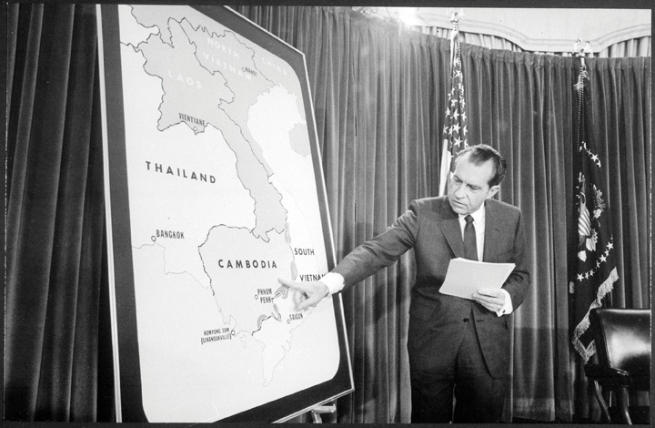
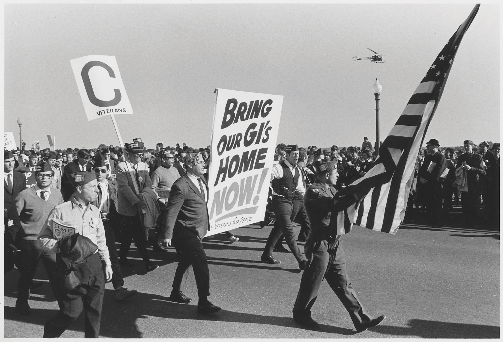
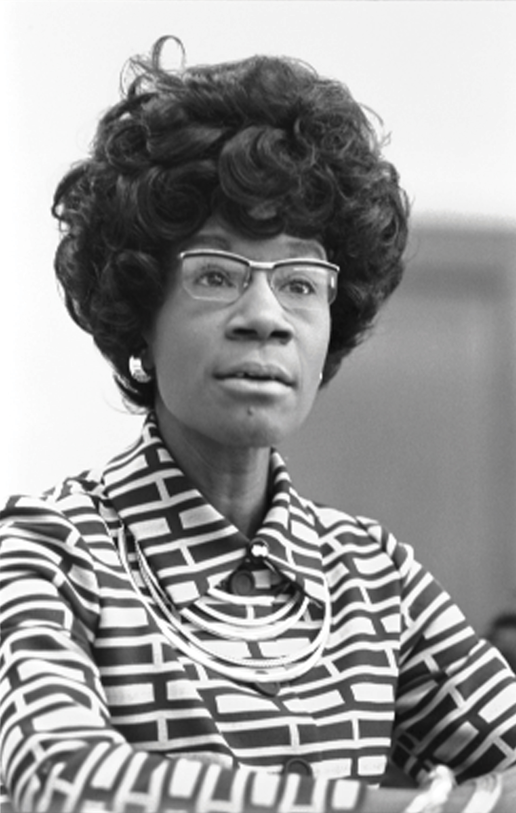
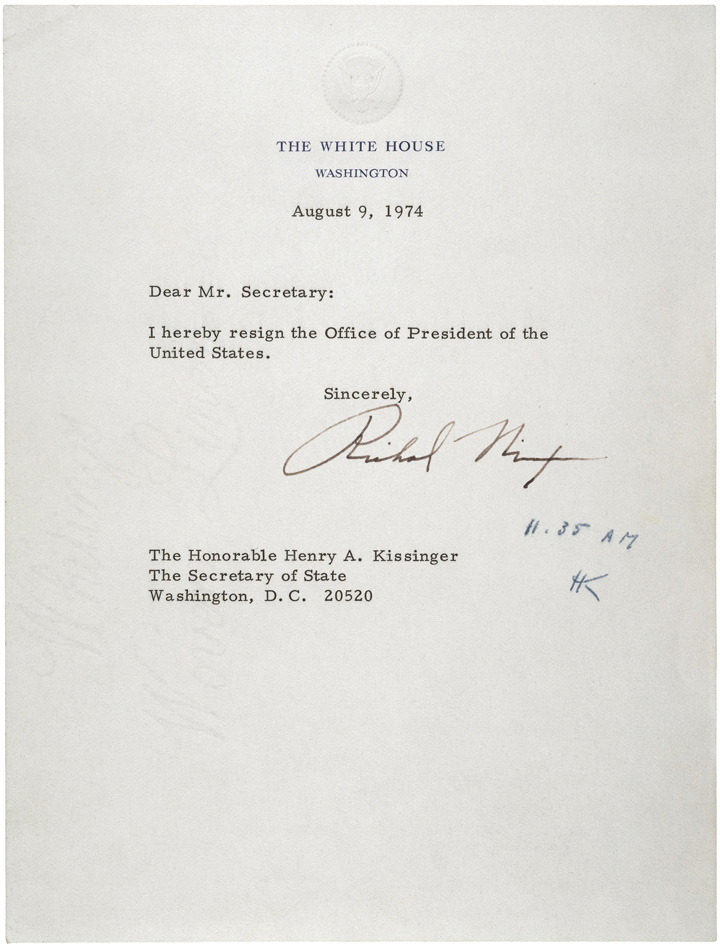
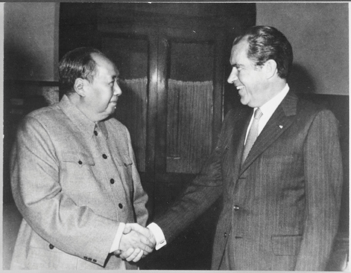
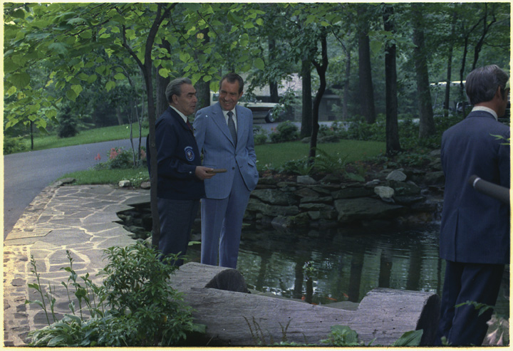
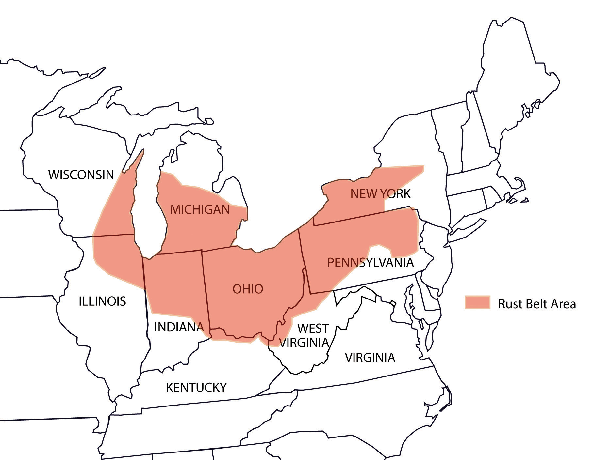
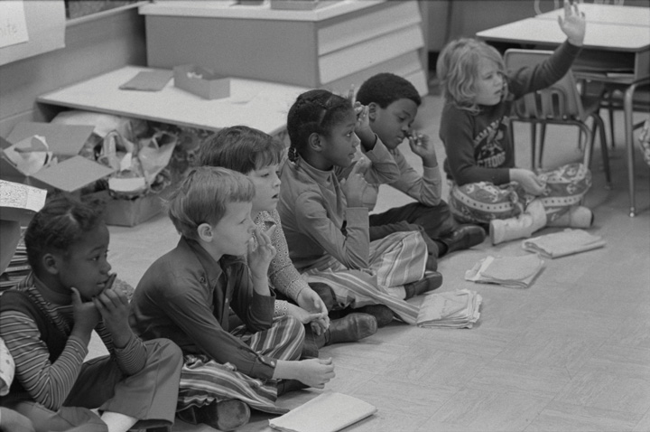

The most important achievement of the federal government during the 1960s was the belated achievement of the goals it had declared a century prior during Reconstruction. The Civil Rights Act of 1964 guaranteed equal protection irrespective of race, while the Voting Rights Act of 1965 protected the right of Americans to vote. The 1970s began with the last major expansion of that right, as Congress overwhelmingly approved a constitutional amendment extending suffrage to eighteen-year-olds in March 1971. The Twenty-Sixth Amendment was ratified by the states within a few months with virtually no opposition. Similar amendments had been offered in previous decades, but the 1960s demonstrated as had no other epoch in US history the political activism of college-aged students. It also demonstrated the sacrifice of the younger generation in Vietnam. As that war continued to rage, most Americans agreed someone old enough to be drafted into the military should also have a voice in government.
Despite liberal and conservative support for the amendment, the dominant feature of America in the 1970s continued to be partisan conflict. However, the 1970s were unique from the previous decade in two major ways. First, the most recognizable forms of racial and gender discrimination had been outlawed and a new federal agency had been created to enforce these laws. Most whites believed this was sufficient and hoped that issues of racial equality would cease to occupy a leading place in the public dialogue. Second, the nation experienced political, military, and economic crises at home and abroad that shook the confidence of most Americans.
Americans had grown accustomed to economic and military hegemony throughout the previous three decades. The political upheavals that challenged Soviet rule throughout Eastern Europe during the late 1960s and the rising tensions between China and the Soviet Union suggested that the United States was prevailing in the Cold War. However, the economic and military might of the United States failed to produce victory in Vietnam, insulate the nation from economic decline at home, or guarantee access to Middle Eastern oil. In response to each of these crises, liberals of the New LeftRefers to those who supported liberal causes during the 1960s and 1970s, such as civil rights for women and minorities and the expansion of the welfare state to confront problems faced by the poor. Whereas the “old” left embraced Socialism, the “new” liberal activists generally sought to distance themselves from Marxist ideas in favor of grassroots action within the existing political system. sought to reassure Americans that the promise of the 1960s might still prevail. Conservatives sought to reinvent themselves by distancing themselves from the racial intolerance of their past while seeking a return to the economic and political hegemony America had once enjoyed.
The New Left was a loose coalition of postwar liberal reformers labeled as “new” to distinguish themselves from the Socialist “old left” of previous generations. Conservatives had rallied behind Republican President Richard Nixon. Eisenhower’s former vice president issued a campaign promise to restore “Law and Order,” a slogan that appealed to many Americans who were uncomfortable with the rapid changes of the past decade. However, Nixon had also tried to win over moderates and promised to end the war in Vietnam shortly upon taking office. Nixon’s pledge of “peace with honor” was vague enough, however, that as president he could still claim that his escalation of the war was exactly what he had promised on the campaign trail.
Nixon hoped that increasing military aid for South Vietnam while escalating the aerial attacks on the rest of the country would allow him to slowly withdraw ground troops without surrendering any more territory to the North. Publicly, Nixon spoke of victory. Privately, even Nixon doubted that the North Vietnamese would ever abandon their campaign to reunite all of Vietnam. Absent of exit strategy, Nixon chose to escalate the war in the hopes of convincing the North to accept an armistice similar to the agreement that ended US participation in the Korean War. Success in this regard, Nixon believed, would make him the most revered commander in chief since Eisenhower. Instead, US forces would belatedly withdraw from Vietnam, which quickly succumbed to Communist forces. Following revelations about some of his secret dealings, Nixon would have the lowest approval rating of any US president and be forced to resign in disgrace.
Figure 12.1
President Nixon points to Cambodia on a map during a press conference in April 1970. Although US forces had been conducting operations in Cambodia prior to this time, the announcement led to renewed protests by antiwar activists.
Almost immediately upon assuming office in early 1969, President Richard Nixon ordered the bombing of the independent and neutral nation of Cambodia. The president hoped to eliminate the supply network that linked North Vietnamese Army (NVA) with Vietcong (VC) fighters in the South. Although destroying these supply networks was a military necessity if the United States hoped to neutralize the VC, bombing a neutral nation violated a host of legal and ethical standards. As a result, the American people were not informed when military operations expanded beyond the Vietnamese border. The people of Cambodia and neighboring Laos had a different perspective, as 70,000 tons of bombs were dropped on their nations during the late 1960s.
In April 1970, Nixon announced that US ground troops would conduct small-scale missions in Cambodia. Antiwar protests increased in the wake of this announcement, and many Americans became concerned that the war might be expanding instead of moving toward the honorable peace Nixon had promised. In reality, Nixon was merely acknowledging what had already been occurring. The delayed protest demonstrates the almost willful complicity of the American media to pass on official military press releases and ignore reports from Laos and Cambodia. International media sources had reported on the bombing of Laos and Cambodia long before Nixon’s public announcement, yet only the New York Times and a handful of other newspapers in the United States reported the story. Most Americans wanted to know as little as possible about the Vietnam War—especially if it appeared that defeating the VC and North Vietnam required American troops to fight beyond the borders of Vietnam.
College students proved an exception to this rule as Nixon’s announcement was met with a wave of moral indignation. Hundreds of thousands of students participated in protests from Seattle Central Community College to the newly founded Florida International University in Miami. On May 4, 1970, a protest at Kent State University turned violent when Ohio National Guardsmen fired into a crowd and killed four students. The event polarized the nation, with those who still supported the war siding with the soldiers who had previously been attacked by rock-throwing students. Some of these students had even set fire to the Reserve Officer’s Training Corps (ROTC) building and then attacked firefighters sent to stop the blaze.
By one perspective, the Kent State tragedy was a “riot” that typified the lack of respect for authority and the rule of law. Those who opposed the war referred to the incident as a “massacre,” emphasizing that most of the students were peacefully exercising their constitutional rights of assembly and speech. Ten days later, Mississippi state police shot and killed two students and wounded a dozen others at Jackson State University, a historically black college. Area whites generally believed that the police used a judicious amount of force against the unarmed protesters, while African Americans considered the event to be another massacre. Like the students at Kent State, many had set small fires and were throwing rocks at the police. However, unlike the Kent State Riot/MassacreThe tragic death of four students on May 4, 1970, after an anti-Vietnam protest escalated into violence on May 4, 1970. Those who opposed the Vietnam War used the phrase “massacre” to describe the event and emphasized that the students were unarmed and exercising their right of free speech. Those who supported the war described the event as a “riot,” focusing on the arson and physical violence some of the students had used against the Ohio National Guard., which polarized the nation, the killings at Jackson State barely made headlines and are seldom included in the historical record.
Historical accounts of the home front also tend to underestimate the diversity of the antiwar movement that quickly expanded beyond activists and scholars like Noam Chomsky to embrace union leaders, Mexican American activists, white factory workers, conservative clergy, and veterans from both wealthy and humble origins Antiwar sentiment was strong in working-class neighborhoods as demonstrated by polls and antiwar protests. This was especially true in minority neighborhoods that provided a disproportionate share of the war’s casualties. Martin Luther King Jr. was one of the earliest national figures to publicly condemn the war. He was joined by other African Americans such as Muhammad AliAn outspoken heavyweight boxing champion who became a member of the Nation of Islam, Muhammad Ali was stripped of his title in the aftermath of his refusal to be inducted into the US Army after he was drafted. Perhaps the most famous athlete of his time, Ali based his refusal on his religious and political beliefs. After the military made it clear he would not see combat, Ali’s willingness to end his career and go to jail rather than accept an assignment traveling and entertaining troops challenged the image of cowardice that was associated with draft evaders. who was drafted but rejected the army’s offer to accept a cozy assignment entertaining troops. Refusing induction, the still-undefeated Ali was stripped of his title and was nearly sentenced to a long prison term.
Those who supported the war likewise represented a diverse cross-section of the United States. In fact, even the most liberal universities, such as Berkeley, were host to both antiwar protests and counterprotests by those who supported the war. Antiwar protesters who occupied campus buildings were usually surrounded by even more students who demanded that the protesters abandon their disruptive campaign so that classes could resume. This was especially true among anxious seniors who feared that the protests would disrupt their plans for graduation. Others publicized the atrocities committed by the North Vietnamese and Vietcong. For every Mai Lai Massacre, they argued, there was an instance of equal or greater inhumanity. After taking control of the city of Hue following the Tet Offensive, for example, Vietcong forces tortured and executed thousands of residents whom they believed had aided the United States.
In June 1971, former US Marine Daniel Ellsberg decided to leak a confidential study that detailed the history of escalation in Vietnam. Dubbed the Pentagon PapersA classified report on the US military’s actions in Vietnam between 1945 and 1967 that was created by the Department of Defense and leaked to the press by researcher Daniel Ellsberg. This report demonstrated that the military and Johnson administration had sought to mislead the American people regarding the success of their actions in Vietnam. by the media, the report contained 7,000 pages that revealed the long history of government misinformation dating back to the Kennedy administration. The New York Times and the Washington Post agreed to publish selections of the leaked documents until the Nixon administration temporarily blocked further publication of the leaked documents. The Supreme Court reviewed the Pentagon Papers and decided that the reports contained nothing that endangered national security, a decision that led to additional releases of the information they contained.
The American public was shocked at the candor of Ellsberg’s leaked documents. Each day the Times published a new letter from a different commander or military strategist plainly stating that the Vietnam War was unwinnable. The reports clearly indicated that the local population had no confidence in the South Vietnamese government and that no amount of napalm could convince them that this regime was fighting for their liberation. At best, these commanders believed that sending more troops and dropping more bombs might convince the enemy to negotiate a settlement that would preserve the image of American military power. The public was outraged to find how military and civilian leaders had deliberately falsified information to make it appear as though US forces were winning the war. Pentagon officials falsified the numbers of enemy killed, deleted all mention of civilian casualties, and buried information about the breakdown of military discipline among US troops.
Figure 12.2
As the war continued, an increasing number of Vietnam veterans returned home and contrasted their experiences with the Pentagon’s official reports of victories against Communist forces. Protests by veterans, such as this 1967 march, became more common in the final years of the war.
Pundits began using the phrase “credibility gapA phrase that came into common usage in the wake of scandals such as the release of the Pentagon Papers. The gap was the distance between what federal government officials knew to be true and the official statements of those officials.”—a term referring to the difference between what government officials reported about Vietnam and what the Pentagon Papers and other sources revealed the government actually knew to be the truth. The Pentagon Papers combined with previous revelations and the antiwar movement to convince most Americans that their president must direct his efforts to ending the war as quickly as possible. “Peace with honor” now meant withdrawal to a majority of Americans. Nixon responded by ending the draft and reducing the numbers of troops in Vietnam. The troop reductions and end of the draft greatly reduced antiwar activities, which led many to question whether peace activists were more concerned with preventing people like themselves from being sent to war rather than ending the war itself. Young men in need of employment continued to join the military and serve in Vietnam, while the rest of the nation pretended as if the war had ended along with the draft. Others pressed on, hoping to convince the nation that withdrawal from Vietnam was more honorable than maintaining the status quo to avoid the disgrace of surrender.
The Pentagon Papers covered only the years prior to Nixon’s election, yet the president became convinced that these documents were released by individuals who were bent on destroying his administration. As a result, Nixon began investigating members of his own staff rather than addressing the important questions that the Pentagon Papers raised about the US presence in Vietnam. Nixon directed his staff to use campaign funds to hire former CIA agents to spy on dozens of the government’s own employees. The administration dubbed these men “plumbers” in relation to their mission to investigate and prevent leaks of information that might harm the White House. Before long, these plumbing jobs expanded to a variety of illegal operations meant to spy on and discredit a long list of people the president considered to be his political enemies. One year almost to the day after the Pentagon Papers were leaked, a group of Nixon’s plumbers was caught inside the Democratic offices of the Watergate hotel.
The North Vietnamese launched another major offensive in the spring of 1972, but Nixon still hoped that he could force the North to accept a cease-fire under his terms. Although Nixon was one of the most knowledgeable US presidents when it came to foreign affairs, he was also one of the least likely to respect the limits of his own authority. While promising the American people that he was working toward peace, Nixon had secretly escalated the war. Nixon approved numerous bombing campaigns and ordered the navy to place mines in every major port of North Vietnam. At the same time, Nixon recognized that these efforts were unlikely to persuade the North to surrender. Nixon simply hoped these actions would help convince the North Vietnamese that US bombing campaigns might never cease, which might lead them to accept US demands regarding American withdrawal. The intense bombing likely had the opposite effect as negotiations stalled throughout 1972. The most contentious issue was the US demand that the North Vietnamese remove all forces from South Vietnam prior to US withdrawal—something that the North viewed as a potential trap.
As election of 1972 neared, over 60 percent of Americans called for an immediate end to the war. An estimated 50,000 to 100,000 draftees had refused to report for induction, many having fled to Canada. Over two hundred army officers had been killed by their own troops, and even veteran soldiers were refusing to follow orders in Vietnam. South Dakota senator George McGovernA historian who wrote about the labor strikes of the Colorado coalfields, George McGovern became a Progressive Democrat who represented his home state of South Dakota for over two decades. McGovern was defeated by Nixon in the presidential election of 1972, largely because he was viewed as too liberal while Nixon was viewed by many voters as a moderate. had called for an immediate end of the war in his failed attempt to win the Democratic nomination for president in 1968. His early opposition to the war gave him credibility among the left as he renewed his campaign for the 1972 nomination. His early opposition to the war was also his biggest political liability. To win the general election, the South Dakota senator needed to gain the support of Americans who opposed Nixon but also viewed the antiwar movement with suspicion.
McGovern was challenged by a number of leading Democrats, but the most intriguing aspect of the 1972 Democratic primary was the candidacy of Shirley ChisholmAn educator and community leader who entered New York politics and became the first African American woman elected to Congress in 1968. Four years later, she also became the first viable African American presidential candidate, winning several states in the 1972 Democratic primary.. An African American congresswoman from New York, Chisholm won several states of the Deep South that only four years prior had been carried by an archsegregationist. Chisholm never came close to challenging McGovern for the nomination, however, as the liberal South Dakotan also received the support of a diverse group of voters who desired change and an immediate end to the war. However, McGovern’s campaign promise to pardon draft evaders alienated many Americans. Recognizing that McGovern’s base of support was tied to Vietnam, Nixon maneuvered once again to promise peace while secretly escalating the war. Nixon withdrew his demand of North Vietnamese withdrawal from South Vietnam along with other provisions he knew would convince the North to agree to peace talks. These negotiations were held in private, allowing Nixon to declare that he had prevailed in forcing the North Vietnamese to accept US terms and delivered on the promise to bring “peace with honor.”
Figure 12.3
New York congresswoman Shirley Chisholm became the first black candidate to win a state primary in 1972. Chisholm won the Democratic primaries of New Jersey, Louisiana, and Mississippi, partly because many white Southerners had joined the Republican Party by this time. Her victory demonstrates the impact of the 1965 Voting Rights Act as these Southern states had excluded black voters and supported segregationist candidates in recent presidential elections.
Nixon’s announcement that peace talks were under way deprived McGovern of his leading issue and led to a second Nixon victory. Achieving peace in Vietnam would prove more difficult, and for Nixon, much less honorable. The latest in a long line of military leaders of South Vietnam pointed out what everyone already knew—North Vietnam would resume the offensive once US forces withdrew. The only hope of prevailing against the North absent of US ground forces, argued South Vietnamese leaders, was if US forces continued their bombing campaigns, provided increased military aid, and forced the North Vietnamese to withdraw from the areas of South Vietnam they presently controlled. Nixon understood that achieving all of these objectives was not likely given the political situation in his own country and the military situation in Vietnam. As a result, many view this first round of peace talks as an attempt to secure Nixon’s reelection and begin placing a positive spin on the abandonment of an ally the United States had created.
Ho Chi Minh had died in 1969, but his successors shared their former boss’s appreciation of the importance of American public opinion. As a result, they recognized that Nixon was under tremendous pressure at home to end the war. If they could simply survive the latest bombing campaign, they believed, Nixon would recognize that accepting North Vietnam’s terms for withdrawal was his only politically acceptable option. Once the election was over, however, Nixon brought back his original demand that the North abandon its positions in South Vietnam. He even demanded that the North abandon all efforts at reunification. The North refused these provisions once again, and Nixon responded by escalating the bombing of Southeast Asia.
On Nixon’s orders, US warplanes dropped 100,000 bombs in the last two weeks of December alone, pausing only for Christmas. Bombs once again proved poor agents of diplomacy. On January 27, 1973, Nixon returned to the bargaining table, this time accepting a cease-fire that permitted North Vietnam to keep the territory in South Vietnam it had already captured. Thousands of US troops and tens of thousands of Vietnamese died in the three months that Nixon had attempted to negotiate a more favorable end to the war. In the end, even Nixon understood that none of his demands were likely to prevent the North from resuming its offensive against South Vietnam as soon as US troops withdrew.
By April 1973, nearly all US forces had fled South Vietnam and the North launched a major offensive. South Vietnamese leaders made desperate appeals for assistance, but Congress and the American public made it clear that they would not accept any plan to redeploy troops to Southeast Asia. Nixon and his successor Gerald Ford sent military aid to South Vietnam and pleaded for Congress to reconsider. On April 30, 1975, the South Vietnam capital of Saigon was captured by North Vietnamese troops. American embassy staff in Saigon and the thousands of military and support staff that had remained in South Vietnam were airlifted to safety just as the troops entered the city.
Figure 12.4

The US military evacuated South Vietnamese officials and their families as Saigon was surrounded by Communist forces. Many of these civilians later migrated to the United States.
A war remembered for brutality ended with a demonstration of valor as US military and civilian officials risked their lives to rescue thousands of South Vietnamese officials during the airlift. Because of their support for US efforts, these individuals would have likely been imprisoned or even executed had they been captured by the North. Most were not fortunate enough to escape, and hundreds of thousands of South Vietnamese soldiers and officials were imprisoned. An estimated 1 million Vietnamese fled into neighboring Laos or Cambodia. Others commandeered any craft they could find regardless of seaworthiness and prayed they would be rescued by the US Navy. Tens of thousands of these civilians would eventually find asylum in the United States while the rest became refugees in a region that continued to be plagued by civil war.
Many US veterans also felt like refugees when they returned to a nation that was less than grateful for the sacrifices they had made or compassionate regarding the difficulty of adjusting to civilian life. Some 58,000 Americans lost their lives in Vietnam, while 365,000 suffered significant injuries. Not counted among this number were those who suffered from post-traumatic stress disorder (PTSD)An anxiety “disorder” that results after one experiences severe psychological trauma. Post-traumatic stress disorder was common among many American GIs during the Vietnam War, although few were diagnosed or treated by the Veterans Administration in a timely manner. Some believe that the use of the word disorder is inappropriate. These individuals argue that the psychological trauma experienced by many veterans is a normal reaction to psychological trauma.. The experience of Vietnam veterans, like those of all wars, varied greatly. Infantrymen deployed to forward locations were surrounded by death, and some turned to alcohol and illicit drugs. For some troops stationed in bases throughout the region, the greatest battle was against tedium. When these men returned to the States, many felt that they were ostracized and reverted to their old addictions. Most others simply tried to rebuild their lives, demonstrating a resiliency that was as inspiring as their many selfless actions in combat.
Refugees in Southeast Asia likewise suffered from the lingering scars of war, as well as new ones caused by land mines that remained buried throughout the region and that killed thousands of civilians each year. The war also resulted in the destabilization of neighboring countries. Cambodia descended into civil war. The Communist Khmer RougeFollowers of the Communist Party of Cambodia who seized power following a civil war that coincided with the war in neighboring Vietnam. Led by the brutal dictator Pol Pot, the Khmer Rouge executed between 1 and 2 million people in their effort to purge Cambodia of skilled workers, the educated, and any other person they deemed subversive to their vision of a totally agrarian society. under dictator Pol Pot eventually seized power and executed an estimated 2 million Cambodians in the late 1970s. Thanks to the efforts of civil rights veteran Bayard Rustin and countless other activists who publicized the conditions Cambodians faced, tens of thousands of Cambodian and Vietnamese refugees were granted sanctuary in the United States.
Americans differed in their interpretations regarding the outcome of the war. For some, like General William Childs Westmoreland, the war had been lost on the home front where protesters had sapped the will of civilian leaders. For others, the war was based on false assumptions, and protests were needed to call attention to the incongruities and inhumanity that surrounded its execution. Controversy regarding the Vietnam War carries into the classroom where students are more likely to learn about massacres than battles. In sharp contrast to the campaign maps that are presented for previous wars, there is rarely any discussion of tactics and strategy or even a single battle beyond the Tet Offensive. The historic view of the home front during Vietnam is also unique. Students learn about protesters rather than factory production, leaked internal documents take the place of encryption machines, and the returning GI appears as a shadowy figure implicitly juxtaposed against the “Greatest Generation” that saved the world from Hitler.
Recollections of Vietnam veterans reveal both the rationale and the shortcomings of this unique historical memory regarding the military history of the war. Oral histories reveal alienation and despair, the inhuman nature of guerilla warfare, and numerous atrocities committed in the name of survival. They also reveal the valor of American GIs who resolved to never leave a fellow soldier behind against a hidden enemy. Interviews with NVA and VC troops indicate a sort of bewildered respect for the dedication of American GIs toward their brothers in arms, questioning the logic of sending entire platoons to rescue a wounded soldier. Opposing forces were especially mystified that US soldiers would even risk their lives to retrieve the body of their fallen comrades. From the perspective of the GI, however, defending the life and memory of a trusted friend may have been the only part of their service that truly made sense to them. However, American veterans returned to a public that was disinterested in their experiences. After four decades, few historians have sought to collect and preserve these perspectives.
Figure 12.5

American soldiers refuse to leave wounded and deceased comrades on the battlefield, a practice that has led to both respect and bewilderment among adversaries. Although risking one’s life to bring home the remains of another comrade makes little sense to many outsiders, it is one of the defining characteristics of a US soldier.
The historical memory of Vietnam is also unique when it comes to the legacy and lessons of the war. Some Americans believe that the lesson of Vietnam is the danger of granting military leaders too much power and the reluctance of civilian officials to respond to popular pressure to end the war. For others, the message for future generations is the danger of permitting politics and politicians from withholding the full range of resources and options from commanders in the field. By this perspective, the overwhelming advantages of the United States in terms of resources and technology made US victory inevitable had it not been for limits placed on military commanders. These individuals believe the United States could have surrounded and eliminated all who opposed their will if only permitted to wage total war as they had in World War II. From the perspective of many Vietnamese, however, the use of napalm and bombing campaigns that dropped a total of five hundred pounds of explosives per resident of Vietnam more closely defined “total war” than any conflict in world history.
Many in Congress at least tacitly agreed with the antiwar perspective and approved the War Powers ActA law designed to limit the ability of the president to commit US troops without the authorization of Congress in the wake of the Vietnam War. The law permits the president to send troops without congressional approval in cases of national emergency. However, she or he must notify Congress within forty-eight hours of this action and withdraw US forces within certain time limits without congressional authorization or a declaration of war. over Nixon’s veto in November 1973. The new law required the president to notify Congress of any troop deployment within forty-eight hours. It also prohibited the president from using troops in an overseas conflict beyond sixty days without a congressional declaration of war. Those who had protested the Vietnam War celebrated the decision as a vindication of the Constitution and proof of the eventual triumph of democracy. Others argued that the new law permitted the fall of Saigon and doomed many Vietnamese who had supported the United States. Still others feared that the reluctance of the United States to intervene militarily might embolden America’s enemies. By this perspective, the War Powers Act aided Communist forces in neighboring Cambodia and discouraged those who were fighting against a left-leaning faction in Angola during subsequent years. For advocates of containment, the legacy of Vietnam was one of second-guessing military commanders and an emasculation of America’s commitment to supporting anti-Communist forces around the globe. For others, Vietnam was a reckless intervention that escalated local conflicts and paved the way for the kind of totalitarian regimes that developed in places like Angola and Cambodia.
Nixon had long believed that his political enemies were conspiring against him ever since losing back-to-back elections, first for the presidency in 1960 and then for the governorship of California in 1962. As president, the release of the Pentagon Papers convinced Nixon that enemies inside his own administration were working against him. In response, he hired former CIA and FBI agents to spy on dozens of his own officials in search of “disloyal” employees who might be leaking negative information to the media. Dubbed the “White House Plumbers,” these covert operatives illegally tapped phones and eventually expanded their operations to include breaking into the offices of political rivals.
On June 17, 1972, five of the plumbers were caught inside the offices of the Democratic National Committee (DNC) headquarters in the Watergate complex in Washington, DC. The Watergate break-inA burglary of the Democratic headquarters committed by the supporters of Republican President Richard Nixon in June 1972. Nixon was forced to resign the presidency due to his efforts to cover up the crime. had been authorized by the Committee to Reelect the President (often referred to by the inaccurate but perhaps fitting acronym CREEP). The break-in was conducted with the knowledge of Nixon’s attorney general John Mitchell, chief of staff H. R. Haldeman, and chief domestic advisor John Ehrlichman. Most importantly, it had been approved by Nixon himself. Watergate was one of dozens of illegal operations designed to neutralize Nixon’s potential opponents. In fact, the June 17 break-in was not the first time Nixon’s supporters had targeted the DNC headquarters, and this particular operation was needed to fix the phone taps that were improperly placed in a previous break-in.
Figure 12.6
Among the evidence used against the White House Plumbers were hidden microphones placed inside ChapStick containers.
Given Nixon’s overwhelming victory over Democratic candidate George McGovern, who won only 17 votes in the Electoral College to Nixon’s 520, few suspected that Nixon or any of his top advisers would have ordered the break-in. Given the amateurish methods of the burglars, most Americans assumed Watergate was the effort of some politically motivated fringe group. Secretly, however, Nixon and his top assistants had moved into damage control mode and diverted tens of thousands of dollars in campaign funds to be used as bribes to convince the five arrested men from revealing their connections to the Committee to Reelect the President. These efforts might have succeeded as the prosecutors and press displayed little interest in the initial trial of the five burglars in January 1973. The most piercing questions actually came from the judge. In response, one of the burglars revealed some of what he knew about the conspiracy. This individual was James McCord, a former CIA operative who resented the way the Nixon administration had tried to blame the CIA for a number of unrelated mistakes. Ironically, Nixon would later try to use the CIA to derail the investigation.
Figure 12.7
Nixon’s letter of resignation included no statement of guilt or innocence regarding his affiliation with the Watergate Break-In. Nixon was pardoned by President Ford and continued to maintain that he had only acted in the best interests of the nation.
By the spring of 1973, Washington Post reporters Bob Woodward and Carl Bernstein were chronicling numerous connections between the Watergate break-in and Nixon’s most trusted advisers. As they closed in on the truth, Nixon hoped to find someone in his coterie, preferably someone at the lowest level, to admit that he or she had ordered the break-in without consulting the president. There was little honor among thieves and even less among the Watergate burglars. By this point, these men had already been given a combined $75,000 from Nixon’s campaign fund to keep quiet. Nixon found that none of his top advisers were willing to fall on their swords to protect him at any price. Many of these men had been conducting illegal or quasi-legal operations for several years, each believing they had enough evidence of the other’s dirty tricks that none of the president’s men would dare testify against the others. However, due to relentless investigating and the testimony of a few officials outside Nixon’s coterie, enough information became known to force the resignation of many of Nixon’s top officials by April 1973.
These resignations and the acting FBI director’s admission that he had destroyed evidence related to the Watergate break-in led to a high-profile senate investigation in the summer of 1973. One individual testified that the president had known about the break-in and ordered a cover-up. Still others presented the break-in as an operation conducted by people who supported Nixon but were operating without the president’s knowledge. It looked to most Americans that Nixon had some connection to the Watergate break-in, but there was still no firm evidence either way until it was discovered that the president had installed a taping system that recorded every conversation in the Oval Office.
Nixon had installed the system believing that only he would have access to the secretly recorded conversations, a resource that could be used to blackmail potential rivals as well as record the events of his administration for his memoirs. Ironically, public knowledge of the tapes proved Nixon’s undoing. Nixon tried to stay ahead of events by voluntarily turning over a few tapes that he believed would prove his innocence. However, these tapes had obviously been tampered with. As a result, this led to increased demands that all of the tapes be turned over. Nixon refused, however, citing executive privilege because of the many sensitive conversations that occurred in the White House on various matters unconnected to the Watergate investigation. Nixon also ordered his attorney general to fire the special investigator who had requested the tapes. Instead, both the attorney general and the assistant attorney general resigned in protest.
If Nixon was not guilty of collusion or a cover-up, the American public asked, why was he working so hard to derail the investigation? Nixon’s public approval fell to 24 percent—the lowest of any president in US history. As Nixon continued to insist that he was “not a crook,” the nation endured an agonizing year of trials and procedural investigations. The investigations culminated with the US Supreme Court case United States v. Richard M. Nixon, after which Nixon was ordered to release the White House tapes. Anything dealing with matters of national security remained classified, but the president’s conversations regarding Watergate were released. These tapes indicated that Nixon had conspired to use the CIA to cover up the Watergate break-in. These illegal actions were the reason Nixon was impeached and would have been removed from office had he not voluntarily resigned on August 8, 1974. However, the tapes were most shocking in their revelation of secret operations in Cambodia and dozens of illegal spying operations beyond Watergate.
Nixon’s resignation would have elevated Vice President Spiro Agnew to the presidency had he not previously been forced to resign after an unrelated investigation revealed the former Maryland governor had accepted bribes from a government contractor. Agnew resigned in October 1973—just as the Watergate investigation was heating up. Nixon appointed Michigan congressman Gerald FordThe thirty-eighth president of the United States, Gerald Ford had been a long-serving member of Congress representing Grand Rapids, Michigan. Ford was appointed by Nixon to replace Vice President Spiro Agnew after he was forced to resign following a finance scandal. Nixon soon resigned as well due to his role in Watergate, which elevated Ford to the presidency. to replace Agnew. As a result, it was the unelected Gerald Ford who became president when Nixon resigned.
As president, Ford disarmed many critics through candor and humility. Ford was the first to point out that he had been appointed rather than elected and promised to lead by consulting others. He also joked that he was a “Ford not a Lincoln,” a humble remark and a reference to the reliable and no-frills line of automobiles he implicitly contrasted against the luxury models offered by the same company. He could have called himself a Mercedes, as most Americans were simply relieved that the long national nightmare of Vietnam and Watergate was over. Ford’s approval rating stood over 70 percent when he took office. However, the new president may have confused the public’s desire to move forward with a willingness to forget all about Watergate. Ford’s approval rating dropped 20 percentage points the day he announced a full pardon of ex-President Nixon for any crimes he committed—including ones that might be found in the future. Many Americans believed that Ford was now part of the Watergate cover-up, speculating that he had been appointed in exchange for a promise to pardon Nixon if he was forced to resign.
The Watergate investigation revealed that the CIA had participated in many of Nixon’s surveillance operations and had conducted wiretaps and other illegal investigations of antiwar organizations inside the United States. The agency came under fire as the CIA was prohibited from conducting domestic operations. The result was a series of investigations that revealed a litany of CIA assassination plots, secret payments, and even an effort to destabilize Cuba by poisoning livestock in hopes of fomenting revolt against Castro.
It also became clear that the CIA had supported a military coup that led to the death of Chile’s elected leader Salvador Allende in September 1973. Allende was a Marxist who the CIA had tried to prevent from being elected in 1970. Once in office, the CIA worked to disrupt Allende’s government and recruited Chilean officials who might be interested in using the military to seize power. The US government’s exact role in supporting the coup has never been precisely determined, but the Nixon administration welcomed the emergence of coup leader Augusto PinochetDictator who ruled Chile after leading a coup against the democratically elected Socialist leader of Chile in 1973. Fearing the spread of Socialism in South America, the United States offered tentative support for Augusto Pinochet’s regime despite his brutal repression of dissenters. as a victory against Communism. Pinochet tortured and executed thousands of Allende’s supporters and replaced a left-leaning but democratically elected government with one of the most repressive military dictatorships in Latin America. Once this information became public, Congress decided to curtail the CIA’s power to operate with impunity and passed laws demanding closer scrutiny of future operations.
In the 1960s, the Organization of Petroleum Exporting Countries (OPEC)A cooperative formed in 1960 by oil-exporting nations whose members seek ways to maximize profits related to oil exports. OPEC demonstrated its power in the 1970s with a series of boycotts against the West that led to a severe energy crisis and increased price for oil. Most OPEC members are located in the Middle East, but other members include Venezuela, Angola, Nigeria, and Ecuador. was created as an economic alliance that hoped to work collectively to regulate the global oil market. Oil-producing nations such as Venezuela, Iran, Iraq, Kuwait, and Saudi Arabia believed that the tremendous postwar demand for oil did not match its price, which had remained fairly constant in real dollars for nearly a century. However, OPEC’s initial efforts to restrict production stumbled because these nations were so dependent on oil exports for their livelihood—the very factor that had kept supplies high and prices low. The only way to increase the price of oil, OPEC founders recognized, was to reverse the present power structure and make nations that imported oil dependent on the nations that produced oil, rather than the other way around. The challenge was to convince all oil-exporting nations, especially those of the predominantly Arabic Middle East, to restrict production simultaneously.
A failed invasion of Israel by several of oil-producing nations in 1973 spurred the unity OPEC leaders had been hoping for. In response to the West’s support of Israel in the Yom Kippur WarOctober 1973 invasion by Egypt and Syria of the Sinai Peninsula and Golan Heights along their disputed border with Israel. These territories were formerly held by Egypt and Syria, but had been occupied by Israel after Israel repelled a similar invasion in 1967. With Western aid, Israel once again defeated Egypt and Syria., OPEC’s Arabic member states voted to impose an embargo on the United States and Western Europe in October. The war itself was a continuation of the Israeli-Palestinian conflict, as Egypt and Syria reinvaded Israel in hopes of taking back territory it had lost in previous wars. The United States and Western Europe responded with military aid that assisted Israel in its successful defense. This Western intervention resulted in a coordinated effort by religious and secular leaders throughout the Arabic world to force the West to abandon Israel, with the method being the refusal to sell oil to any ally of Israel.
The embargo was not simply about ethnic and religious conflict. For many years, the members of OPEC and even the US-installed shah of Iran had complained that Western nations charged inflated prices for the food and manufactured goods they exported to the Middle East while the oil they purchased remained constant despite growing demand. These complaints were especially relevant in 1973 given recent inflation. The price of Western goods had doubled even as the price the West paid for oil remained about the same.
In the first two decades after World War II, Americans had grown accustomed to the idea that their nation dictated the economic, political, and military terms that other nations (outside of the Soviet sphere) abided by. The oil embargo challenged this confidence and caused an energy crisis that affected all Americans instantly. Fuel prices quadrupled after the start of the embargo in October 1973. An estimated one in five gas stations simply ran out of fuel altogether during the peak of the crisis the following spring. Recognizing that the gulf between supply and demand was so great that the price might continue its upward spiral, the government limited the amount of oil each state received and began printing fuel ration coupons similar to those used in World War II. Although the embargo ended before the federal rationing program took effect, states passed regulations limiting the number of days consumers could purchase fuel. For example, many states utilized a system where a digit in a consumer’s license plate determined what days they could purchase gasoline. Speed limits were reduced to fifty-five miles per hour or less, and even NASCAR reduced the distance of its races to conserve fuel.
Figure 12.8

Thousands of service stations simply ran out of fuel during the 1973 energy crisis, including this cleverly named service station.
The US economy was damaged but not disabled by the embargo because domestic oil production still accounted for 70 percent of the nation’s consumption in the early 1970s. In addition, domestic production quickly increased once price controls were released, permitting US oil companies to sell their product at market prices, which were substantially higher than the rate the government had set. However, many Western European nations depended almost entirely on the Middle East for oil. North Atlantic Treaty Organization (NATO) members were beginning to reconsider their relationship to Israel, demonstrating the limits of US authority over its own NATO allies. In response, the United States offered millions in aid payments to Israel in exchange for an agreement to withdraw from several areas that were claimed by its Arabic neighbors.
From the perspective of these Arabic nations, the embargo demonstrated that oil could be used to further political objectives. However, business and political leaders in Saudi Arabia and other nations were more impressed by the rapid increase in the price of oil. Saudi Arabia decided to resume sales to the West in the spring of 1974 to take advantage of the dramatic price increase. Other Arab nations likewise placed profits ahead of politics, easing the embargo on nations that still supported Israel. However, the price of oil remained near its 1973 highs because OPEC successfully restricted production and maintained the artificially high price after the initial embargo. Oil did not return to its pre-1973 price (adjusted for inflation) until the 1980s and 1990s when global production increased and the end of the Cold War promoted freer trade. During these later decades, OPEC struggled to dictate production quotas to its members, several of which were at war with one another and in desperate need of revenue.
Even as America dropped bombs on Communist-controlled areas of Southeast Asia, the Nixon administration was able to almost simultaneously reduce tensions with the Soviet Union and China. Critics of the Vietnam War questioned how the same government that had justified escalation in Vietnam as necessary to roll back Chinese and Soviet aggression could negotiate so freely with both nations while simultaneously requesting more military aid for South Vietnam. From the perspective of the Nixon administration, however, the increased tension between the Soviet Union and China presented an opportunity to drive a wedge in the heart of the Communist world. Others simply hoped diplomacy might be a step toward peaceful coexistence.
The same optimism did not extend to the Middle East, where Cold War tensions and the Israeli-Palestinian conflict mixed with concerns about the flow of oil and control of the Suez Canal. Cold War tensions also continued to intensify local conflicts in Central Asia, Latin America, Africa, and Southeast Asia. In each of these areas, the Cold War expanded postcolonial conflicts into full-scale wars fought by local people armed with US and Soviet weapons. Given the consequences of US escalation in Vietnam, these conflicts remained peripheral to Nixon’s diplomatic strategy of détenteThe lessening of tensions between adversaries. In this context, détente refers to a reduction of tensions among political leaders and nations. (lessening tensions) with the Soviet Union and China. During his five-and-a-half years in office, Nixon negotiated the most significant arms reduction treaty in world history to that time, restored diplomatic relations with China, and discovered common ground with Soviet leaders based on mutual self-interest and maintenance of the status quo.
The Nixon administration’s greatest application of détente was the reestablishment of diplomatic relations with the People’s Republic of China. Nixon’s visit to China was cloaked in secrecy, the culmination of covert meetings arranged by National Security Adviser and future Secretary of State Henry KissingerA political scientist who served as Nixon’s national security adviser and secretary of state for both the Nixon and Ford administrations. He is best remembered as an advocate of détente between the United States and the Soviet Union and China.. Kissinger recognized that if the United States could normalize relations with China, it could further isolate the Soviet Union in world politics. The public’s first clue that the two nations might resume diplomatic relations came in the spring of 1971 when China invited the US ping-pong team to Peking. Even this seemingly nonpolitical invitation was part of the secret communications between China and the State Department.
In February 1972, Nixon surprised the world with his unannounced arrival in Peking. Nixon and Mao met and agreed to resume diplomatic relations and work toward mutual trade agreements. Nixon also agreed to withdraw US forces from Taiwan, the non-Communist Chinese government in exile that America had recognized as the legitimate government of China for the past two decades. To the rest of the world, it must have seemed peculiar to witness the former cold warrior, who frequently warned Americans about the dangers of “Red China,” shake hands with Chairman Mao. Others were more amazed that conservatives in America raised few objections to Nixon’s withdrawal of US forces from anti-Communist Taiwan. But the rapprochement was not necessarily atypical for the pragmatic Nixon or the contrarian nature of Cold War politics. Just as only Eisenhower could have questioned military spending in the midst of the Cold War, Nixon may have been the only politician who could have made such a move without being labeled as “soft” on Communism.
Resumption of diplomatic relations with China increased pressure on the Soviet Union to tread carefully as the United States and China moved closer to one another. In fact, one of the leading reasons Nixon visited China was to further détente with the Soviet Union on his terms. Nixon and Soviet premiere Leonid BrezhnevThe leader of the Soviet Union between 1964 and 1982, Brezhnev greatly increased the power of the Soviet military but also sought to reduce tensions with the West he recognized were hurting his nation economically. Brezhnev notoriously crushed democratic movements in Eastern Europe and invaded Afghanistan under a premise known as the Brezhnev Doctrine that justified intervention if the interests of area Communist nations were endangered by the internal affairs of another nation. communicated frequently, and both agreed that some forms of Cold War competition, such as infinite nuclear proliferation, were mutually self-destructive. Détente was generally welcomed by both sides and is typically praised by historians; but it was not without its own internal contradictions. Détente was predicated on the acceptance of “mutually assured destruction” as a key to stability—a sort of nonviolent hostage taking that discouraged aggression on all sides. Détente also meant that both sides accepted the postwar division of Europe and much of the rest of the globe.
Détente’s emphasis on stability appealed to and angered many Americans at the same time. The left was optimistic that détente would lead to arms reductions but was careful to point out that stability did not imply justice for the people of the world struggling under Soviet domination. Those on the political right likewise viewed détente with uncertainty. For conservatives, détente was a tactical victory that also might signal a retreat from earlier commitments to wipe Communism from the map. In contrast to the moral certainties and rhetoric of cold warriors like Nixon in the 1950s, détente also meant the abandonment of clear-cut interpretations of nearly every global and domestic event as related to Communist aggression.
Figure 12.9
Richard Nixon meets with China’s Mao Tse-tung in February 1972.
The apex of détente during the Nixon administration occurred in 1972 when the United States and Soviet Union signed the Strategic Arms Limitation Treaty (SALT)Because there were actually two SALT treaties, the 1972 treaty between the United States and Soviet Union that froze the number of nuclear missiles each nation could possess is called SALT I. A treaty in 1979 that sought to build on the arms reductions of SALT I is called SALT II, although the second treaty was never approved by Congress.. The SALT treaty was the culmination of years of negotiations and limited the number and type of nuclear missiles each nation could possess. The Moscow Summit also featured a series of agreements that encouraged trade and cooperation between the two nations. Each of these agreements was soon jeopardized by internal affairs within the Soviet Union and the American response to these changes.
Concerned with the growing number of wealthy and talented people who were leaving the Soviet Union, Moscow added a large monetary fee for visas that prevented most of its citizens who wished to leave the Soviet Union from doing so. Liberals in Congress blasted the provision as a violation of the civil rights of Soviet citizens while conservatives utilized the provision to renew their anti-Soviet rhetoric. Congress responded by passing a law that denied favorable trade relations with any non-Capitalist nation that restricted the movement of its own citizens. Although it did not mention names, the provision was clearly aimed at the Soviet Union. The new law angered Soviet leaders, even those who opposed the emigration restrictions they had just passed as a tacit admission that their nation had yet to become the worker’s paradise Karl Marx had predicted. The Nixon administration recognized that pushing for internal Soviet reform would torpedo his efforts at détente and tried to get Congress to reverse course. Ironically, the mines and bombs Nixon had previously ordered against North Vietnam torpedoed his attempts at détente when one of these mines sunk a Soviet ship and caused the deaths of many sailors.
Figure 12.10
Soviet Premier Leonid Brezhnev meets with Richard Nixon in June 1973.
Despite increased tensions following this naval tragedy, Nixon and his successor Gerald Ford attempted to keep improving relations between the United States and the Soviet Union. Other than an increase in trade (mostly American grain desperately needed by the Soviet people), détente had peaked in 1972. Ford retained Secretary of State Henry Kissinger, but even the efforts of this brilliant diplomatic tactician failed. A notable exception occurred in August 1975 when both Ford and Brezhnev joined thirty-three other nations in signing the Helsinki AccordsA 1975 treaty signed in Finland intended to reduce Cold War tensions. The United States, Soviet Union, and other nations that signed the treaty agreed to accept the post–World War II division of Europe, including a promise to respect the present borders of nations in Europe. The agreement also committed each nation to honor the UN Declaration of Human Rights.. Signatories of this declaration agreed to respect the present national boundaries throughout Europe. The agreement effectively meant that the United States, the Soviet Union, and the other nations accepted the postwar division of Europe into eastern and western spheres and agreed to respect existing national borders.
The agreement also contained a pact to abide by the United Nations Universal Declaration of Human Rights that Eleanor Roosevelt had pioneered. This final provision worried the authoritarian leaders of the Soviet Union and Eastern Europe who continued to arrest their own citizens for political dissent. In 1970s America, where dissent was often celebrated, Gerald Ford came under fire from both the left and the right for his participation at Helsinki. Liberals viewed the declaration as an abandonment of those in Eastern Europe who were fighting for democracy and therefore challenging the postwar division of Europe. Conservatives agreed, although they focused their anti-Helsinki rhetoric on what they believed had been another episode of Americans kowtowing to Soviet and other world leaders.
Many Americans viewed recent world events, especially America’s military defeat in Vietnam and its growing dependency on foreign oil, as a symptom of the economic decline that affected their daily lives. Thousands of factories closed each year and the relative wages of industrial workers declined throughout the 1970s. So many Americans migrated in search of work between 1970 and 1990 that the majority of the nation’s population growth occurred in the South and the Southwest. By 1980, more Americans lived in these Sunbelt regions than the rest of the nation combined.
Figure 12.11
As more and more American factories closed in the 1970s and 1980s, commentators described the emergence of a Rust Belt that featured a net loss of jobs in many of the leading cities of the East and Midwest.
Portions of the Northeast and the Midwest soon became known as the “Rust BeltThe formerly dominant industrial region encompassing the northeastern United States. The term is a reference to the rust that accumulates on the factories after they were abandoned and the wide belt of industrial cities from St. Louis to Chicago and across Ohio to Pittsburgh.,” a name reflecting the thousands of factories that closed from St. Louis to Milwaukee and across the Great Lakes from Detroit back down to Pittsburgh and the Ohio River valley. The deindustrialization that caused the Rust Belt stretched beyond these borders and affected East Coast cities such as Baltimore and Philadelphia as well as other industrial communities throughout the nation. The demise of these Rust Belt factories that had once employed millions of blue-collar workers was complex. In many cases, employers found it was cheaper to start new factories in areas such as the South where labor unions were weak. Many other companies decided to open factories in other countries where wages were lower and safety and environmental laws did not apply.
With the loss of factory jobs came the decline of union membership and the rise of part-time and contract laborers who were not eligible for benefits and could be fired at any time. Unemployment increased to around 9 percent by 1975, while union membership dropped below 25 percent of nonfarm labor. An unprecedented number of married women entered the workforce in hopes of bolstering family income, mostly accepting low-paying service sector jobs. Cities likewise struggled with the simultaneous loss of middle-class workers and factories.
Downtowns areas responded by launching “urban renewalCivic efforts aimed at revitalizing and redeveloping urban areas with various construction projects. Urban renewal plans were often controversial because they involved a municipality claiming privately owned land through eminent domain. Eminent domain required compensation for owners of the land but often made no provision for families that rented homes in the areas that were to be redeveloped.” projects that sought to remove the blight of empty factories and build public works projects. In other cases, urban renewal was simply a euphemism for slum clearance. Minority neighborhoods were demolished to make room for interstate overpasses and other projects designed to connect the suburbs with downtown office buildings. Most urban renewal projects were conducted with little regard for the dispossessed. Although political support for public housing remained low in the 1970s, urban renewal soon required that a growing number of housing projects be built. Seeking to create low-cost units, most cities erected high-rise apartments on cheap land as far away from the middle class as possible. Those who supported the creation of housing projects, simply known as “projects” by many Americans, envisioned these low-cost units as a path toward upward mobility, a sort of halfway house for the working poor. However, these projects concentrated poverty in ways that quickly turned working-class neighborhoods into ghettos that were walled in by interstates and isolated from jobs and public services.
In the 1970s, a new phenomenon related to urban renewal called gentrificationA process that occurs when middle and upper-class residents move into formerly working-class neighborhoods. The process of gentrification often forces neighboring working-class families from their homes as rents and property values rise beyond their ability to pay. occurred in many American cities. Property values in older neighborhoods near urban centers had declined; an opportunity for investors who purchased entire city blocks evicted the remaining tenants, bulldozed or renovated older homes, and converted commercial buildings into loft-style condos. Developers also contracted with upscale retailers and bistros that appealed to young urban professionals, known collectively as “yuppies.” Racial and ethnic majorities were either evicted or simply priced out of their former neighborhoods, many facing few other housing options beyond the newly constructed projects. Black and ethnic businesses in these neighborhoods were likewise evicted or otherwise forced out, with few options to reestablish their businesses in an urban landscape that had become divided into gentrified downtowns, lily-white suburbs, and ghettoized housing projects.
As developers sought to modify the urban landscape of the 1970s, a different set of Americans became concerned with other aspects of the urban environment. Young adults in the 1960s became increasingly concerned about a variety of social issues such as environmental protection. The environmental movement saw its first major victory when Congress passed the Clean Air Act of 1963, a law that regulated auto and factory emissions. In response to a series of environmental disasters and the increasing political awareness of his constituents, Wisconsin senator Gaylord Nelson suggested that colleges and universities set aside April 22, 1970, as a day of learning and discussion of environmental issues. Utilizing the teach-in strategy of the antiwar movement, students and faculty at the University of Wisconsin and around the nation organized grassroots programs to raise awareness about pollution, toxic waste, and the preservation of natural resources. Earth DayA global holiday instituted by American college students and activists to promote environmental awareness every year on April 22 since 1970. has continued to be observed every year on April 22 since its inception in 1970 and is presently celebrated by more than 300 million people around the world.
Figure 12.12
College students and other young people led the way in promoting Earth Day, which was first celebrated in 1970. Participants conducted service projects, such as these students who are removing trash from the Potomac River.
The colossal success of the first Earth Day in 1970 demonstrated to US politicians that environmental protection had become a leading priority of their constituents. Dozens of environmental protection laws that had been rejected by Congress in previous decades were soon passed by large majorities. President Nixon soon responded by promoting the creation of a federal agency dedicated to environmental issues. Few historians consider Nixon as an environmentalist. As a result, the conservative president’s backing of environmental preservation demonstrates the success of grassroots organizers in forcing a pragmatic politician to support their agenda.
During his 1970 State of the Union address, Nixon called on Americans to “make our peace with nature” even as he was secretly working to prolong war in Vietnam. Later that year, Nixon consolidated and expanded existing federal antipollution programs into the Environmental Protection Agency (EPA)A federal agency created in 1970 that conducts research and promotes education regarding the environment and is responsible for enforcing federal standards regarding environmental protection.. The new federal agency was granted authority to create and enforce standards regarding pollution with the guidance of Congress. For example, the EPA pressed Congress to outlaw the pesticide DDT in 1972 because of its toxicity to birds and fish, a danger that had been recognized since the 1950s and popularized by the best-selling novel Silent Spring. However, it was only after a lengthy study by the EPA in conjunction with Congress that the chemical was actually banned in the United States.
President Nixon also signed a more stringent Clean Air Act in 1970 that set a five-year deadline for the nation’s industries to meet new pollution standards. The law also required automakers to reduce vehicle emissions by 90 percent. Automakers complied with the law by including catalytic converters on every new car, a device that uses catalysts to alter the chemical properties of exhaust. These innovations slightly raised the cost of new automobiles and required consumers to switch to lead-free gasoline. The changes angered muscle-car enthusiasts but also led to a dramatic reduction in the smog that had plagued America’s cities since the 1950s.
Congress passed other laws in the early 1970s that limited the use of pesticides, protected endangered species, and required mine operators to limit the pollution that entered neighboring streams and ground water. Although millions of Americans participated in Earth Day celebrations and supported the idea of restricting pollution, many Americans were also concerned that the EPA’s new restrictions would raise costs for US businesses in ways that might accelerate the loss of domestic manufacturing jobs. As the economy continued to stagnate in the early and mid-1970s, corporate claims that new regulations were forcing plant closures became more concerning and led to some backlash against the EPA.
One of the biggest domestic controversies of the 1970s pitted corporate interests and the need for low-cost energy against concerns about environmental protection. Alaska was the last great frontier, but in 1968, massive oil reserves were discovered that many believed could reduce the nation’s dependence on foreign oil. Environmentalists opposed construction of the eight-hundred-mile Alaska Pipeline that would be necessary to transport oil from the isolated reserves in the Alaskan frontier to the nearest ice-free port in the Northern Pacific. As a compromise, the pipeline was built with a number of features to protect the environment. For example, the pipeline was elevated to allow for the migration of caribou, and hundreds of safety valves allowed engineers to immediately stop the flow of oil in case a leak developed anywhere along the line.
Leaks were an even greater concern when it came to nuclear power plants. Nuclear energy had been greeted by many as a panacea that would solve America’s energy crisis by reducing costs and pollution. Dozens of nuclear plants were operated safely until an accident occurred at Pennsylvania’s Three Mile IslandA nuclear plant near Harrisburg, Pennsylvania that overheated in 1979 and nearly led to a complete nuclear meltdown. The accident led to tougher industry regulations to prevent similar accidents in the future and also discouraged the construction of new nuclear plants. in March 1979. The accident itself was caused by human error, leading to the failure of the reactor’s cooling system. As a result, the reactor overheated creating the potential for a meltdown of the containment system that kept radioactive materials from being released into the environment. The actual radiation that had escaped was minimal, but the public was understandably concerned that tens of thousands of people might have died. The accident had cost hundreds of millions of dollars in cleanup operations and curtailed the construction of nuclear reactors in the next few decades. As a result, debates regarding the financial and environmental costs of coal-fired plants remained a leading issue in debates about the environment.
As had been the case with the automobile and other new technologies of the past, the full impact of new technology that aided environmental protections, along with other major innovations of the 1970s such as microcomputers, would not be realized for nearly a decade. These new technologies created jobs in numerous fields throughout the 1970s. However, new technology also allowed companies to do more with fewer employees. For example, new technologies in communications created jobs but also allowed US companies to operate overseas more efficiently. By 1970, hundreds of US firms had become multinational corporations with operations around the globe. Not only did this globalizationThe development of a more integrated global economy with fewer trade restrictions that would permit corporations to compete equally around the globe. Many Americans oppose globalization for fear that permitting foreign firms to operate on the same terms as domestic companies could result the reductions of worker pay, environmental protection standards, or the loss of jobs overseas. of industry allow manufacturing operations to occur closer to the source of raw materials, but globalization also permitted US-based businesses to hire foreign employees for lower wages and avoid abiding by US labor standards and tax regulations.
Defenders of multinational corporations pointed out that these businesses improved international relations. At the very least, nations that traded with one another seldom went to war. They also claimed that America profited from overseas operations through declining prices for consumer goods and rising corporate dividends for US investors. While offshore operations might have been exempt from US taxation, globalization advocates pointed out that the federal government still received some revenue because the profits of individual stockholders were taxable. Critics countered that these companies were shipping jobs overseas and avoiding their fair share of taxation.
More distressing to many US workers than the details of corporate taxation, it appeared that globalization was an attack on the domestic job market. The United States had produced 40 percent of goods and services worldwide in 1950, but this percentage had declined to 25 percent by the 1970s. Others worried about the military implications of a US economy that lost its manufacturing base. After all, these individuals explained, US victory in World War II was based on the rapid conversion of existing factories to wartime production. By the late 1970s, the United States imported more goods than it exported. Each of these statistics warned of a possible return to America’s subordinate role in the global economy. Even more alarming to some, the nations that were making the largest gains in the production of automobiles and aircraft were Japan and Germany. While some Americans resented the fact that the rapid turnaround of these war-torn nations was partially due to US aid, others believed that German and Japanese economic recovery was inevitable. From this perspective, US aid had converted former rivals into two of America’s strongest allies in the global war against Communism. Japan and Germany’s economic recovery certainly benefited the US and global economy. However, the simultaneous decline of US industry was a bitter pill for World War II veterans, many of whom faced layoffs that may have been the result of international competition.
The late 1970s saw a resumption of economic growth and personal income, although these increases were modest in comparison with the rapid gains of developing economies. All of this added to the perception that the United States was on the decline. Inflation doubled between 1967 and 1973, while unemployment remained high at 8 percent. In the past, unemployment and inflation had usually moved in opposite directions. Prices increased when the economy was doing well but fell during periods of recession. This double whammy of rising inflation and unemployment led economists to create a new label to describe it: stagflationAn economic condition pairing high inflation with economic stagnation..
President Nixon responded in dramatic fashion by abandoning the gold standard in 1971. Prior to this decision, the world’s economic system was anchored by the US dollar, which was directly exchangeable for a set amount of gold. Abandoning the gold standard allowed the United States more flexibility to respond to the financial crisis. However, it also furthered the impression that the nation was on the decline. This perception was increasingly strong with industrial workers in the Rust Belt, many of whom experienced significant declines in their real wages as they coped with the consequences of inflation and layoffs. Even those whose wages did not decline often made less money in real terms because of inflation, which exceeded 10 percent by the time Ford took office.
Nixon’s domestic policies were guided by an idea he called the New FederalismIn general terms, New Federalism refers to the transfer of powers and authority from the federal to the state government. Nixon hoped to follow this doctrine regarding a host of social programs turning over certain government functions to the states to be funded by federal grants.. The core of the president’s approach was to share federal tax revenues with states to administer as they saw fit. A pragmatic politician, Nixon actually made few changes—especially when it came to popular federal entitlement programs such as Social Security and Medicare. Nixon actually increased spending for these and other welfare-state initiatives to maintain electoral support and the cooperation of the Democratically controlled Congress. Nixon even supported the creation of the Occupational Safety and Health Administration (OSHA) in 1970, which enforced regulations regarding workplace safety.
However, Nixon also demonstrated his disdain for liberals and their ideas when he tried to remove the funding Congress had set aside for the Office of Economic Opportunity (OEO). When this failed, Nixon appointed a new OEO director who was instructed by the president to destroy the agency. Ultimately, the federal courts ruled that Nixon’s efforts to eliminate the OEO represented an unconstitutional effort to thwart the will of Congress. The OEO was spared and continued to administer antipoverty programs such as Volunteers in Service to America (VISTA) and provide funding for Community Action Agencies (CAA).
Figure 12.13

President Ford is pictured meeting with Donald Rumsfeld and Dick Cheney, two leading officials in his administration. Cheney replaced Rumsfeld as chief of staff when Ford appointed Rumsfeld as secretary of defense in 1975.
CAAs were grassroots community welfare organizations that administered federal antipoverty grants. They legally required the poor to participate in making decisions about how to administer federal funds. In other words, CAAs applied the principles of Nixon’s New Federalism to welfare and rewarded initiative rather than simply distributing cash to recipients. Ironically, Nixon hoped to encourage this kind of initiative among the poor during his many attempts to overhaul the welfare system. For example, Nixon’s Family Assistance Plan of 1969 would have replaced direct welfare payments with a system requiring job training and other proactive steps before one might receive welfare payments. Nixon’s proposed welfare plan also would have provided supplemental income to those who found and accepted employment at a job that failed to provide a federally guaranteed minimum income. Many of Nixon’s other domestic policy ideas also failed to pass Congress. During Richard Nixon’s 1974 State of the Union speech, for example, the president called on Congress to pass a comprehensive health insurance act. Had the plan passed, it would have required employers to purchase health insurance for all of their employees and would have created a federal health plan that any citizen could have joined.
President Ford’s chief domestic priority once he assumed office was to reverse stagflation. Ford began with an ineffective program called “Whip Inflation NowGerald Ford’s plan to reduce inflation by asking citizens to reduce their discretionary spending thereby using supply and demand to bring down prices.,” which had the president distributing “WIN” buttons and giving speeches touting voluntary energy reduction and personal savings. Ford’s solution was based on the idea that if consumers saved more and purchased less, the laws of supply and demand would slowly reverse inflation. Ford also raised interest rates and reduced federal spending in hopes of tackling inflation. While all of these measures could reduce inflation, they did little to stimulate the economy. The president’s Democratic opponents in Congress presented Ford as the next Herbert Hoover, accusing the president of supporting measures that might turn a recession into a depression. Ford’s decision to veto dozens of spending bills, including a popular New-Deal-like federal jobs program, did little to bolster his image among working-class voters.
Journalist Gloria SteinemA journalist who became one of the leading feminist voices of the 1970s, Steinem was the founder of Ms. magazine, a supporter of women’s reproductive choice, and one of the leading proponents of the Equal Rights Amendment. described herself as an unlikely convert to feminism. Assigned to cover a feminist rally in 1969, Steinem explained that something inside her “clicked” when she recognized commonalities she shared with the women she interviewed. Steinem recognized that while she had supported civil rights and spoken out against the Vietnam War, years of internalizing negative images of women led her to uncritically accept gendered stereotypes that had been applied to feminists. “I had believed that women couldn’t get along with one another, even while my own trusted friends were women,” Steinem explained. “It is truly amazing how long we can go on accepting myths that oppose our own lives.” Steinem explained how she suddenly realized that stereotypes against feminists served many of the same purpose of sexist jokes and labels that often presented women as caricatures rather than real people. Many of these stereotypes permitted a woman’s value to be defined by male perceptions of sexual attraction, which marginalized the ideas and contributions of women. By 1972, Steinem was the publisher of Ms., a new kind of women’s magazine that gave voice to many of the same frustrations she had felt.
Steinem’s magazine was immediately successful during the socially active prime of the women’s movement. Ms. also came under heavy criticism by women who hoped it would be more radical and those who felt that the magazine did not adequately represent the experiences of all women. For example, a special issue dedicated to negative self-images of women toward their bodies came under fire after the editors selected a slender white woman for the cover. Readers protested that this cover furthered the kinds of images that judged all women against a single standard of beauty. The editors had actually considered using a larger or nonwhite model, but reconsidered due to fears that the issue’s theme of “negative body image” would only reinforce notions that larger and nonwhite women were not beautiful.
The editors also struggled with issues of whether or not to accept advertisements for beauty products and household cleaners—the leading source of income for most other magazines targeted toward women. Always a source of controversy, the articles made Ms. unique from other women’s magazines even if many of the ads were the same. Writers submitted a variety of articles that brought new perspectives to traditional women’s issues. They also demonstrated how national political issues and international affairs affected women’s lives. Lampooned by male journalists who predicted Ms. would “run out of things to say” in six months, the magazine was a commercial success until the conservative tenor of the 1980s led to lower readership. As revenues declined, the editors became divided regarding the desirability of publishing more popular articles on fashion and celebrities that might attract younger readers.
One of the lasting consequences of Steinem’s magazine was the popularization of the title “Ms.” as an alternative to the titles of “Miss” and “Mrs.” Given the difficulties married women faced when they went in search of work and the assumption that unmarried women would immediately quit their positions on marriage, it is not surprising that many women in the 1970s embraced the marriage-neutral label. The issue of gender neutrality was one of the many topics discussed when the United Nations sponsored the first World Conference on Women in Mexico City during the summer of 1975. Delegates hailing from 130 different nations helped to draft the World Plan of Action, a document that set goals and standards regarding access to education, employment, political participation, and supported greater access to family planning. The World Plan of Action was ratified by dozens of nations but never considered by the US government. President Jimmy Carter responded by appointing a federal commission to study the matter further. One of the results of the commission was the National Women’s Conference, which was held in Houston in November 1977. More than 20,000 women participated in the conference, producing National Plans of Action that was likewise ignored by the government.
The American conference showed that women faced obvious gender discrimination when they sought bank loans. Married women were often required to secure their husband’s approval (but never vice versa), and home lenders refused to consider a married woman’s income in making loan decisions. Most lenders considered female income as supplemental and subject to change at a moment’s notice. This even applied to female veterans applying for Veterans Affairs (VA) home loans. After a lengthy campaign by feminists and consumer activists, Congress passed the Equal Credit Opportunity ActA federal law against using factors such as gender, race, ethnicity, and under some circumstances age in making decisions regarding the extension of credit. The law ended the common practice whereby lenders refused to loan money to married women independently of their husbands or considered only the husband’s income when extending credit to a family. in 1974. This law prohibited creditors from using gender along with race, religion, and national origins as factors in making their decisions. While many lenders were still hesitant to market loans to women and minority groups, a growing number of banks began to recognize that minorities and women were part of an underserved market and quickly changed their business practices to comply with the law. As interest rates increased and fewer and fewer consumers were seeking credit, many lenders actively sought the business of the rapidly increasing numbers of career women—both married and single. Some lenders even sought to market loans and other financial products directly to women, producing advertisements that ran in women’s magazines that featured images of empowered and independent women.
Women also utilized their consumer power to demand changes at colleges and universities. The number of women in higher education surpassed that of men in the 1970s, yet women still represented a small percentage of faculty and the administration. The Higher Education Act of 1972 amended Title IX of the 1964 Civil Rights Act. As a result, the new law is often simply called Title IXThe common name for a 1972 amendment to Title IX (section nine) of the 1964 Civil Rights Act. The amendment prohibits the denial of participation in or benefits of any educational program receiving federal funds.. Title IX banned gender discrimination in any educational program or activity that received federal funding. Although the most visible aspect of Title IX has been the requirement of equal opportunities for participation in college athletics, the most significant outcome of the law is likely the vast increase in the numbers of women in professional, medical, and graduate programs. By 2011, women attended law and dental school in roughly equal numbers as men and represented a rapidly growing percentage of faculty and administrators in colleges and universities.
The new law was a product of the experiences of the bill’s leading sponsors: Oregon congresswoman Edith GreenAn educator and congresswoman from Oregon who authored and successfully guided several major bills regarding women’s rights and education through. Congress. Among these laws were the Equal Pay Act, Title IX, and the Higher Education Act of 1965, which became the basis for popular education programs such as federally subsidized student loans. and Hawaii congresswoman Patsy Takemoto MinkA long-serving congresswoman from Hawaii, Mink was also the first nonwhite woman elected to Congress. She was instrumental in passing a number of laws regarding education, as well as the Title IX Amendment, which now bears her name.. Green was the ranking member of the House Committee on Education and had influenced nearly every bill regarding education over the past two decades. Mink was a Japanese American who became the first nonwhite woman in Congress in 1965 and likewise secured a reputation as a leader of her party. Prior to her election by the people of Hawaii, Mink had experienced discrimination as an undergraduate at the University of Nebraska and challenged the racially segregated housing policies of that school. Mink graduated at the top of her class only to find that dozens of her applications to medical schools had been blocked because of her gender.
Leading women of color held a prominent role in the National Women’s Conference in Houston, but rank-and-file minority women continued to experience discrimination within the movement. Women of color responded by seeking balance between promoting and criticizing the predominantly white feminist movement. At the same time, they challenged white women to really consider what they meant when they spoke of liberation and equality. In 1977, the Combahee River CollectiveAn African American feminist group formed in Boston that chose their name to commemorate a series of Union army raids that were planned by Harriet Tubman and others. The raids disrupted plantations and freed slaves in coastal South Carolina during the Civil War. In 1977, the groups issued a statement describing the oppression of women as a synthesis of interlocking forms of oppression that encompassed gender but also race, sexual orientation, and other factors., a Boston-based African American feminist organization, issued the “Black Feminist Statement.” The women of the Combahee River Collective described the ways that race and gender combined to oppress black women in ways that made their struggle for equality unique from other women. The result of their message was that more and more feminists came to understand that that liberation required a multiplicity of voices.
Figure 12.14

Hawaii congresswoman Patsy Takemoto Mink was one of the leaders behind Title IX, a law that forbid gender discrimination in colleges and other educational institutions.
The feminist movement became more respectful of diversity than the larger society in the 1970s as feminists actively sought the perspectives women that reflected unique experiences based on race, sexual orientation, social class, religion, and ethnicity. The women of the Combahee River Collective labeled this multiplicity of voices “identity politics” and taught that women’s liberation could not be achieved by a movement that followed a top-down approach, discounted the perspectives of minorities, sought to minimize the participation of lesbians, or failed to consider the agency of women who held a variety of conservative religious views. Combahee was accompanied by meetings of Latino women and other groups, each agreeing that feminists must embrace a collective of movements rather than one message that was meant to apply to all women.
Differences of opinion regarding abortion and reproductive rights did not emerge suddenly in the late 1960s and early 1970s. For many Americans, however, it may have appeared that the issue had only recently surfaced given the reluctance of Americans in previous generations to discuss the issue publicly. Responses to surveys are always troublesome measures if relied on completely. However, statistics derived from surveys can be helpful in tracking changes in public opinion. For example, 26 percent of respondents in a 1965 survey opposed abortion, even if childbirth represented a threat to the health of the mother. Only 8 percent of respondents felt this way in 1970. Similar surveys indicate that only half of the nation viewed premarital sex as immoral by the early 1970s, whereas three fourths of Americans opposed the practice a decade prior. Other surveys demonstrate that premarital sex and abortion were common prior to the 1970s, even if both had been largely confined to the unspoken fringe beyond polite society.
Because abortion was illegal prior to 1973, women desiring to terminate their pregnancies sometimes physically harmed themselves to induce a miscarriage. Others sought the services of unlicensed practitioners whose methods were often equally harmful. Wealthy women could afford to secure the services of a small number of experienced physicians who were willing to perform safe abortions outside of the law for the right price. The majority of women who sought to end their pregnancies, however, were those who lacked such resources. By the early 1970s, those who sought to legalize abortion were publicizing the tragedy of “back-alley” abortions that often harmed or even killed the pregnant woman.
Opponents of abortion were not unmoved by these tragedies. From their perspective, however, an abortion was not merely a medical procedure that terminated a pregnancy. Opponents of abortion believed that a fetus, even at an early stage of development, was a human life whose rights were equal to the mother. A key indicator of where one stood on the abortion debate was whether one chose to use the term fetus or child when discussing their beliefs on the subject. A second feature that was unique to the debate surrounding abortion at this time was the level of public participation. In contrast to previous decades when the subject was seldom discussed publicly, the debate surrounding abortion entered American life as never before as the Supreme Court considered its conditional legalization in 1973.
The Supreme Court’s ruling in Roe v. WadeA controversial Supreme Court decision in January 1973 that invalidated a state law in Texas and legalized abortion throughout the United States under certain circumstances. legalized abortion in the first trimester of pregnancy. The court’s ruling, however, was far from the final word on the subject as attempts to overturn Roe v. Wade through local restrictions or a direct challenge to the Supreme Court decision itself remains a leading priority among many evangelicals. Given the sensitivities regarding the issue and concerns for both the privacy of women and the rights of unborn children, abortion remains a controversial subject and most politicians try to avoid public discussion of the issue. Scientific advances promoting new ways to conceive children also remain controversial, although the promise of in vitro fertilization for married couples that cannot conceive through natural childbirth has become widely accepted. In 1978 when the first “test tube” baby was born, many feared that natural childbirth would become outdated. This same technology has remained a source of controversy, however, when the conception process has been utilized by unmarried women or same-sex couples.
The late 1960s was the high tide of the civil rights movement. Many historians also believe the period was the zenith of America’s support for greater educational and economic opportunities for African Americans and other minorities. Liberal groups had proliferated in the United States throughout the 1960s, leading to the emergence of greater rights consciousness among African Americans, women, the poor, Native Americans, Latinos, and other groups. However, by the early 1970s, many whites feared that the rising condition of minorities might threaten their own tenuous status. Whites began to display their own theories of rights consciousness that argued that affirmative action and busing violated their civil rights.
Also by the early 1970s, radical groups such as the Students for a Democratic Society (SDS) had self-destructed, mainstream civil rights groups like the National Association for the Advancement of Colored People (NAACP) were mired in hundreds of complicated and expensive court cases, and the once-mighty Student Nonviolent Coordinating Committee (SNCC) was descending into fratricidal conflict. By 1972, SNCC had ceased to exist as an interracial civil rights organization as its leaders chose black nationalism over interracial activism. Meanwhile, existing Black Nationalist groups such as the Black Panthers faced both internal and external pressures. The Panthers sought to balance community service with militancy, while simultaneously fending off the FBI’s attempts to destroy their organization. As these institutions struggled to remake civil rights in a post–Jim Crow world, the drama of nonviolent mass resistance was replaced by the technicalities of documenting housing and employment discrimination. What was once a matter of simple justice—eliminating laws requiring segregation and white-only hiring policies—had now become a complex issue involving school redistricting and affirmative action. For many, promise of the 1960s receded into logistical details regarding school desegregation and the tangled the roots of economic inequality.
Chief among these logistical challenges was the question of how to achieve racial balance in neighborhood schools when most cities remained racially segregated. Many districts had implemented “freedom of choice plans” that permitted or encouraged black and white parents to send their children to schools where they would be in the minority. Few parents took advantage of these voluntary plans, and the courts decided that something more than voluntary participation would be required to achieve racial balance. Beginning in the late 1960s, urban school districts began reassigning children from minority neighborhoods to school districts with large white majorities. White children were also sent to predominantly nonwhite schools, although this rarely occurred in equal numbers.
Given the need to transport large numbers of children beyond their own communities, this strategy of achieving racial balance became known as “busingThe transportation of children to schools beyond their own neighborhood with the goal of achieving racial balance in schools despite the existence of racial imbalance in communities..” Mandatory busing upset many parents on both sides of the racial divide due to the inconvenience it imposed on parents and students. Busing was especially burdensome on large families in inner cities who often found that their children were now attending several different schools throughout the city. Others were upset that busing was destroying the connection between schools and neighborhoods.
Black parents pointed out that these plans were often not implemented equally across the color line. Black parents complained their children usually were the ones who had to wake up hours early each day. Others questioned whether such sacrifice was worth the “privilege” of attending a school outside of one’s community where students were often subject to racial prejudice. White parents in working-class urban neighborhoods also questioned the arrangement, pointing out that in the few cases when white children were assigned to inner-city schools, their children rather than wealthy suburban whites were the ones selected.
Defenders of busing recognized these shortcomings and asked critics to come up with alternatives. Short of mandating racial balance in neighborhoods and requiring families to change residences, busing seemed the most practical solution to the persistence of racial segregation in schools. Busing also had many positive attributes, as oral histories of children who participated in these plans often reveal. For example, an administrator who grew up in the predominantly black community of North Omaha recalled that a busing plan in her community led to her first friendships with other white children. Other residents pointed out that busing also connected black and white parents, who would have been unlikely to meet one another had it not been for busing. At the same time, most oral histories reveal that these friendships were usually superficial and schoolchildren rarely spent time at the homes of their new friends.
Charlotte, North Carolina, was even more racially segregated than Omaha, although the pattern of racial segregation that concentrated most of the black population near the center of the city was not unlike that of North Omaha. In Charlotte, children attended schools that were legally open to all races but were still racially segregated in practice—a pattern known as de facto segregationIn contrast to de jure segregation (segregation by law), de facto segregation refers to the continued separation of races and ethnicities regardless of laws that are racially neutral. Because of these factors and the persistence of segregated neighborhoods, advocates of school integration believed that it was not enough to simply outlaw segregation.. Members of Charlotte’s black community sued the school board in 1970, demonstrating that the schools were nearly as segregated as they had been twenty years prior. In response, school officials devised a plan that redrew the city’s high school districts to achieve racial balance. The new plan cut the city like a pie, with students in the predominantly black center being assigned to schools throughout the city.
This plan put the burden of desegregation on black students who now had to travel great distances to outlying schools, yet the chief opposition came from white parents. These whites formed their own organization to oppose what they believed was a violation of their civil rights. By 1971 when the US Supreme Court agreed to hear Swann v. Charlotte-Mecklenburg Board of Education, the case centered on the question of whether busing was a legal method to achieve desegregation. The Supreme Court decided that in some cases, busing might be the only method to achieve the desegregation required by Brown v. Board. The Charlotte case resulted in dozens of lawsuits and the creation of mandating busing plans in cities throughout the United States. For a time, it appeared that legal toleration of de facto segregation had been replaced by a mandate to reverse the last vestiges of segregation, even if it meant transporting children all over America’s cities. However, just three years later, a second US Supreme Court decision limited the ways busing might be used in large cities.
One of the many cities that instituted busing plans in the wake of the Swann case was the northern metropolis of Detroit. Decades of white flight resulted in predominantly white suburbs, while most children who lived within the city limits of Detroit were black. After black plaintiffs won a lower court decision in Milliken v. BradleyA 1974 Supreme Court decision that forbade schools from busing students across school district lines to achieve racial balance unless it could be proven that those lines were intentionally drawn to segregate schools in violation of Brown v. Board. The decision rendered busing to achieve racial balance in many urban areas., school officials created an elaborate system that transferred children throughout dozens of school districts within the greater Detroit metropolitan area to achieve racial balance. Affluent whites in suburban communities such as Grosse Point were outraged that their children were being forced to attend urban schools in predominantly black neighborhoods. Other whites in working-class neighborhoods just across the city limit candidly admitted that one of the major reasons they moved was to ensure that their children would not be assigned to the Detroit city schools.
The Milliken case reached the Supreme Court in 1974 and resulted in a controversial 5–4 decision barring the use of busing across district lines, unless it could be proven that those lines had been intentionally drawn to segregate students in the first place. In Detroit, school district lines simply corresponded with the many different independent cities that together made up the Detroit metropolitan area. As a result, the city of Detroit once again became its own school district and the only legal remedy to the resulting de facto segregation became a much smaller busing plan that utilized school districts that were just outside the city limits. Because schools are largely funded by local property taxes, the Milliken decision was particularly damaging to those who hoped to equalize school funding between suburbs and the increasingly impoverished school districts of inner cities. The decision also reversed busing in many metropolitan areas and confirmed white flight as a method to legally thwart school integration.
Figure 12.15
School officials in Charlotte, North Carolina, were able to increase racial diversity in classrooms by transporting children to schools beyond their own neighborhood. This photo was taken in 1973, two years after the Supreme Court upheld the practice of busing children to achieve racial balance in Swann v. Charlotte-Mecklenburg Board of Education.
By 1970, urban black voters were often registered in equal or greater numbers than the nationwide average. White flight and black voter registration led to hundreds of black candidates winning election to city offices, and many of America’s largest cities elected African American mayors. Many white residents who remained in these cities did so by choice and worked alongside their black neighbors to counter the effects of white flight.
Other whites viewed the rise of black political leaders and busing as an assault on their neighborhoods and their way of life. In Boston, one such group took the name Restore Our Alienated Rights (ROAR) and campaigned to end the “forced busing” of black students into “their” neighborhoods. Most ROAR members insisted they were not racists, a position at least partially supported by some of the arguments made by their more moderate supporters. For example, some ROAR members indicated that they would support busing if plans to achieve racial balance included the wealthy suburbs rather than only the white working-class areas of South Boston.
The actions of many ROAR members reduced the credibility of this message, however, as ROAR rallies often disintegrated into obscenities and violence. In the summer of 1975, ROAR members stoned buses containing black children on their way to predominantly white schools, set fire to symbols of desegregation, and even attacked black children and passersby. The antibusing riots in Boston, Philadelphia, and other cities that summer were often cited as proof that Northerners were no less racist than Southern whites. Other whites joined peaceful counterprotests attended by various racial and ethnic groups that supported busing or at least hoped to find alternative methods to ensure racial diversity in schools. These peaceful counterprotests attracted far more participants in Boston and elsewhere but failed to produce the headlines or notoriety of ROAR. Most whites across the nation expressed disapproval of busing, and the electoral strategies of local and national politicians catered to antibusing sentiment by promising its abolition. Without the support of the US Supreme Court, busing plans were quietly reduced or suspended in most cities by the late 1970s.
The civil rights movement demonstrated that there was no singular African American experience or perspective. It also showed that black Americans, like all Americans, were divided by social class. The post–civil rights movement witnessed the extension of this gulf as the black middle class expanded to include more families, while those in poverty languished even further behind. Equality of access to universities and the reduction of employment barriers in business, education, and the professions led to an expansion of the black middle and upper class well beyond the “talented tenth” W. E. B. Du Bois had lauded in the early twentieth century. Whereas only 13 percent of black families earned enough to be considered middle or upper class in 1960, this percentage tripled to include one-third of black families by the 1970s. Equally impressive, by the mid-1970s, more than a million African Americans were enrolled in universities. This represented a 500 percent increase from two decades prior and indicated that blacks and whites were now attending college in roughly the same proportion. Whereas black college graduates found that their degrees mattered little among white employers in the past, this new generation of black graduates found fewer obstacles. For some, new regulations encouraged racial diversity and guaranteed that their applications were given serious consideration in government jobs and large corporations for the first time.
There were four main reasons for this sudden change of heart among predominantly white employers in government and corporate America. The most important was a belated recognition that racial discrimination was contrary to the interests of a particular firm or agency because it robbed that organization of some of the best and brightest applicants. The second was a likewise delayed recognition that a diverse workforce encouraged new perspectives and fostered a positive work environment. The third reason was the negative consequences that companies, which refused to hire black employees, faced given the growing power of black consumers.
The fourth reason for the growth of minority employment was the development of a new remedy intended to proactively counter patterns of historic discrimination. This solution was called affirmative actionPositive steps to increase the number and percentage of minorities and women in employment, education, and other fields where they have been historically discriminated against and underrepresented. Affirmative action plans may include recruitment of minority candidates or more controversial measures that give preference to women and minority candidates. and was implemented by government agencies and a handful of private companies. Supporters of affirmative action recognized that it would not be enough to simply order an end to overt policies that discriminated against minority applicants in the past. Instead, employers must actively recruit minority candidates and consider diversity as a positive attribute when making employment decisions. Hailed by some as the only way to reverse previous behavior, affirmative action was also criticized as reverse discrimination. This backlash against affirmative action was especially aroused when a handful of agencies and universities set apart a number of slots for minority employees or students.
Universities and other organizations that established minimum quotas for minority employment believed such policies were needed to quickly reverse their own historic patterns of discrimination. Supporters of these plans cited statistics and other measures that highlighted the egregious discrimination that had happened in the past and believed that something more than a promise to start taking minority candidates seriously was needed. For example, city police and fire departments in cities with large black populations usually employed only a handful of black firefighters and police among hundreds of whites. White applicants at these departments enjoyed an unfair advantage, advocates of affirmative action pointed out, in that they were often the friends and family of existing members. In addition, without a policy of affirmative action well-qualified minorities might not apply, given the historic injustices practiced by departments in the past. By this perspective, affirmative action leveled the playing field and minimum quotas ensured that a department must employ minority firefighters and police in numbers that were representative of the city’s racial demographics. However, from the perspective of a white applicant who was denied employment, affirmative action might have kept them from obtaining a job. In many other cases, the perception that affirmative action might be to blame created a scapegoat that took on a life of its own.
Due to the difficulties of proving whether a white candidate had been rejected because of affirmative action, the nation’s attention focused on a handful of cases involving standardized tests where whites with higher scores were still denied employment or admission to a college. In the mid-1970s, a white applicant who was denied admission to the medical school of the University of California Davis sued the college for racial discrimination. A Vietnam veteran with outstanding credentials, Allan Bakke had slightly higher grades and standardized test scores than a few minority applicants. These individuals were admitted as part of a special program to increase diversity by setting aside sixteen places for minority students within each incoming class. The Supreme Court decided Regents of the University of California v. BakkeA landmark Supreme Court decision in 1978 that barred the use of quotas that set aside a certain number of places for minority candidates. The court’s complicated split decision supported the continuation of affirmative action plans but believed that government-sponsored racial quotas violated the Civil Rights Act of 1964. in June 1978. The Supreme Court issued a complicated and split decision that declared racial quotas were legal only in extreme cases. The school was also ordered to admit Mr. Bakke. Similar cases throughout the next decades would reflect the conflict between a color-blind approach and strategies of correcting historic injustices and the persistence of racism without violating the principles of fairness.
Affirmative action affected only a minute fraction of the hundreds of millions of decisions regarding admissions and employment around the country. Yet for many whites, affirmative action came to symbolize a host of frustrations associated with the perception of relative decline that permeated nearly every aspect of life in the 1970s. No one recognized this more than the politically savvy Richard Nixon. Throughout his career, Nixon occasionally took unpopular stands in defense of civil rights. However, by 1972, Nixon’s campaign engineered something it called the Southern StrategyAn electoral strategy of Richard Nixon to exploit the racism of white voters without explicitly supporting white supremacy. Nixon used this strategy to turn the formerly Democratic states of the South to the Republican Party by appealing to state’s rights ideas that had been used in the past to support segregation laws, speaking out against affirmative action and busing, and presenting the Democratic Party as the party of liberals and urban blacks.—an attempt to win the states that had voted for the archsegregationist George Wallace in the last presidential election. Nixon’s opposition to busing and affirmative action was part of the strategy and contributed to his electoral victory in Southern states. That the Republican Nixon prevailed throughout the South signified a historic political realignment considering that Southern whites had been voting the Democratic ticket since before the Civil War.
At times, Nixon was able to appeal to white voters while posing as a moderate. “There are those who want instant integration and those who want segregation forever,” candidate Nixon exclaimed in a speech expressing his opposition to busing. “I believe we need to have a middle course between those two extremes.” However, at other times during his presidency, Richard Nixon made common cause with those who sought to reverse the civil rights movement. For example, Nixon attempted to block the extension of the 1965 Voting Rights Act. Because Nixon knew that Congress would extend the act over his veto, he deliberately chose this symbolic action to win the votes of white Southerners who had opposed the Voting Rights Act under the guise of state’s rights.
Nixon recognized that his Southern Strategy risked solidifying the drift of black voters away from the Republican Party. However, he also recognized that sacrificing the black vote was a politically savvy move in the 1972 presidential election due to the winner-take-all system of the Electoral College and the unlikelihood that black voters would pull the lever for Nixon over the liberal George McGovern. Nixon’s Southern Strategy led to the portrayal of the Democratic Party as the party of liberals and minorities in the minds of Southerners and many conservatives throughout the nation. The state’s rights message of the Nixon campaign was more subtle when it came to race than the rhetoric of archsegregationists such as George Wallace. However, the Southern Strategy had the same effect of further dividing electoral politics along racial lines both within the South and around the nation.
Figure 12.16

Members of the American Indian Movement (AIM) held protests throughout the nation, including sit-ins at the headquarters of the Bureau of Indian Affairs in Washington, DC.
In 1972, American Indian Movement (AIM) leader Russell Means organized a protest called the Trail of Broken Treaties. Means sought to publicize and protest the long history of the federal government’s dishonest dealings with Native American tribes. Chief among the group’s demands was the return of more than 100 million acres of land. AIM activists also demanded the elimination of the Bureau of Indian Affairs, presenting evidence they believed demonstrated over a century of fraud and paternalistic mismanagement.
AIM made headlines later in the year when they held a sit-in at the Bureau of Indian Affairs in Washington, DC. The protesters argued that the bureau had pursued a strategy of token payments to Native Americans for over a century. This strategy permitted the government to appear generous, they argued, but never fully compensated Native tribes for the loss of their land in a way that could lead to independence and self-sufficiency. The small welfare payouts also reduced the likelihood that significant investments would be made in tribal educational and vocational programs. These token payments did little to address the issues that had been caused by hundreds of years of oppression, the protesters argued. In response, AIM called on the government to invest the kinds of resources that would lead to tribal autonomy though educational and economic development programs that would be managed by tribal members themselves.
The sit-ins brought attention to the fact that Native American schools were underfunded and graduates of these schools had few job opportunities. For this reason, the protesters explained, over three-fourths of children dropped out of reservation schools. Natives also protested their exclusion from traditional fishing and hunting grounds by holding “fish-ins” where tribal members “trespassed” onto federal lands to protest the seizure of tribal lands. Members of AIM also followed the example of the Black Panthers by organizing neighborhood patrols aimed at reducing crime and preventing police brutality. Perhaps the most obvious symbol of the connection between the members of AIM and the Panthers was the adoption of the rallying cry of “Red Power” and the wearing of red berets. As the name AIM implies, these activists also began to refer to one another as “Indians,” embracing a term they believed relayed the unique historical experience of tribal members.
AIM activists protested against discrimination against Native Americans by law enforcement officers. When a white man convicted of killing a Sioux Indian received a light sentence, two hundred Sioux Indians took eleven hostages and seized a church in the small town of Wounded Knee, South Dakota. The planners of the Siege at Wounded KneeA 1973 protest by armed members of the American Indian Movement. AIM members seized hostages near the site of the famous 1890 massacre of Sioux Indians by federal troops. AIM demanded an end to what they believed was harassment of their members, self-determination for the Lakota Sioux, and control of all the lands they believed had been granted to the tribe by previous treaties. selected this location to remind Americans of the 1890 massacre that had occurred nearby. Millions of Americans were familiar with the 1890 massacre due to the 1970 bestseller Bury My Heart at Wounded Knee by historian Dee Brown. The contrast between the single-shot rifles of the protesters and the automatic weapons of federal marshals and the FBI who surrounded the church rekindled images of the artillery and Gatling guns used by federal forces in 1890. The siege itself led to a seventy-one-day standoff between AIM activists and federal agents. With supplies dwindling, other AIM leaders attempted to resupply their fellow protesters. The FBI intervened, which led to a shootout that injured many on both sides and claimed the lives of one of the AIM members.
In June 1975, a similar shootout occurred at the Pine Ridge Reservation in South Dakota where one Native American and two federal agents were killed. Armed confrontations did little to improve the conditions on reservations and soon led to divisions among Native American activists. Similar to the conflict among the members of the Students for a Democratic Society, SNCC, and other groups, members of the AIM were divided on the question of whether these more aggressive models of self-defense might be counterproductive. In addition, AIM leaders faced the same FBI harassment that had been used against black activists. Between the internal conflicts and outside pressure, AIM soon mirrored the disintegration of SDS and SNCC.
While the armed struggles of AIM activists drew headlines, more subtle protest measures brought positive results for tribal members. Native American leaders went to libraries and archives, chronicling treaty violations of the federal government dating back to the eighteenth century. From Maine to Alaska, native tribes won a variety of court settlements in the 1970s that provided both financial compensation as well as guarantees of legal autonomy. For example, the Taos Indians regained control of nearly 50,000 acres in New Mexico. The settlement included sacred sites such as Blue Lake, which had been seized by the federal government at the turn of the century. Natives also appealed to Congress, leading to the passage of the Indian Self-Determination and Educational Assistance ActReversed previous government policies and strategies aimed at terminating recognition of Native American tribes. Termination was replaced by the goal of self-determination regarding the affairs and government of native tribes. For example, federal funds for education guaranteed by previous treaties and agreements would now be under the control of native tribes to administer as they saw fit. in 1975. The new law guaranteed that tribes would be able to determine how to spend federal aid as well as administer their own educational programs. The law also gave tribes authority to determine how natural resources on tribal lands would be utilized—an important reform given the large coal, lumber, and oil and gas reserves on many reservations.
Figure 12.17

This protest in Chicago was held in support of migrant farm workers. Consumers around the country boycotted certain producers and stores that refused to negotiate with representatives of the United Farm Workers.
In the mid-1960s, Mexican American activists marched hundreds of miles from the Rio Grande Valley to the Texas state capital of Austin. Similar to the protest marches of African Americans to the state capitals of Mississippi and Alabama, these activists demanded equality. They also demanded that their history and culture be included in college and public school curriculum. The college that is now California State University, Northridge, was the first major university to offer a course on Mexican American history in 1966. Throughout the late 1960s and 1970s, minority students attended college in larger numbers, and their demands for similar courses became essential to those colleges and universities of the Southwest. Students and faculty held teach-ins and began to refer to themselves as Chicanos and Chicanas—labels that predated the formation of the United States and reflected one’s pride in their Mexican heritage. The following year Chicano students held protests calling for these informal history and culture courses to become part of the official curriculum in high schools and colleges. Other students joined organizations such as the Mexican American Youth Organization (MAYO), which operated chapters at high schools and colleges.
Chicano students at San Francisco State and Texas State College in San Marcos held protests and threatened to withdraw their tuition if more courses on the history and culture of Chicanos were not included. Students at San Jose State held their own commencement ceremony in protest of the lack of inclusion they faced. Students at the newly created Colorado College of Opportunity (today Metropolitan State College of Denver) may have been the most successful in convincing administrators to respond to their demands. Construction of the college displaced a number of Mexican American families in the neighborhood of Aurora where it was built. In response, the founders of the college had pledged to serve the needs of the local Mexican American community. As a result, administrators were especially compelled to respond to the demands of Chicano students at Metropolitan State, who were also a sizable portion of the student body. Puerto Rican students likewise held a strike against City College in New York in 1969 until administrators agreed to create an ethnic studies program. The result of these protests was that hundreds of colleges created similar programs throughout the country.
The most dramatic manifestation of the Chicano movement was a series of antiwar protests organized by the Chicano MoratoriumAn organization that connected Chicano activism with the antiwar movement by raising awareness about the disproportionate number of casualties among Chicano and other nonwhite soldiers. The most famous act of the Chicano Moratorium was a march and mass protest in East Los Angeles in 1970.. Chicano men were disproportionately drafted into the armed services during the Vietnam War. They were also disproportionality assigned to infantry units where they died in disproportionately high numbers. Accounting for only 10 percent of the nation’s population during these years, Mexican American soldiers accounted for 20 percent of US combat deaths in Vietnam.
An estimated 20,000 to 30,000 people, many wearing the signature brown berets of the Chicano movement, participated in a protest march and meeting in Los Angeles in August 1970. Although this and the dozens of previous antiwar protests launched by the Chicano Moratorium were peaceful, police in Los Angeles used a robbery at a nearby liquor store as a pretext to send hundreds of officers into the crowd. Officially searching for the liquor store bandit, police used clubs and tear gas against those who had been celebrating the morning’s march with a concert. The scene quickly disintegrated into violence, and hundreds were injured as helicopters dropped teargas on participants and police alike. A peaceful gathering that had been part celebration and part protest soon turned into a riot when three activists were killed by police. Among the victims was journalist Ruben Salazar who was beloved in the Chicano community for his fearless reports on police violence. Although officials ruled his death an accident, the fact that he died after being hit in the head by a teargas canister while seated at a table led many Chicanos to believe that the police had intentionally targeted Salazar.
The year 1970 was also when activists formed La Raza UnidaAn independent political party formed in 1970 that seeks to represent issues important to Latino through the electoral process., a political party that sought to represent the growing number of Mexican American voters. The group won few elections in its formative years but succeeded in registering tens of thousands of new voters. La Raza also worked with attorneys who used the legal system to overturn practices such as gerrymandering that had discouraged Mexican Americans from voting in the first place.
Other activists used the courts to challenge the continued segregation of Mexican American schoolchildren following their 1970 victory in Cisneros v. Corpus Christi Independent School District. Texas schools had long classified students as either white or black, a system that segregationists had cited in claiming that the city’s separate schools for white students and Mexican American students were not actually segregated. After all, the segregationists argued, almost all the students enrolled were either “white” or “other white” according to the official statistics, so how could there be racial discrimination? The court agreed with plaintiffs that Mexican Americans were an identifiable minority and that segregation of these students violated the US Supreme Court’s ruling against segregation in Brown v. Board.
It was also the year 1970 that Dolores HuertaCofounder of the United Farm Workers, Huerta was an educator and community leader who joined forces with Cesar Chavez to organize farm laborers and advocate their causes to federal and state governments. Huerta directed the successful nationwide boycott of grapes that forced California growers to recognize the UFW., Cesar Chavez, and the United Farm Workers (UFW) secured their first contracts with California grape producers. Contracts between landowners and agricultural laborers were not covered by federal labor laws. As a result, farm workers could be paid below minimum wage. In addition, federal workplace safety regulations and laws recognizing the rights of workers to organize unions did not apply. The UFW’s victory came against tremendous odds and inspired similar protests in citrus and lettuce fields throughout California. It also led to similar movements in the sugar beet fields of the Great Plains and farms and ranches of the American Southwest.
Mexican American culture had long enforced traditional notions of gender but Huerta was able to demonstrate how political activism on behalf of Mexican American families was consistent with the traditional role of women as guardians of the home and family. Huerta was instrumental in enrolling female members. This led to entire families joining the picket lines and handing out literature to consumers at grocery stores. As a result, Huerta became recognized as the leading organizer of UFW boycotts throughout the 1970s. Other leaders such as Esther Padilla testified before Congress about the conditions faced by workers and their families. Through their efforts and the continuing activism of other leaders such as Cesar Chavez, the boycotts and the growing political power of Mexican American communities convinced lawmakers in California to pass a law that required growers to recognize the elected representatives of their workers in 1975.
A gay subculture slowly developed in urban districts during the 1950s and 1960s, partially spurred by the experience of homosexual veterans and victims of the Lavender Scare. Dozens of cities were host to formal support networks and gay rights organizations throughout these decades. The Daughters of Bilitis, named after a lesbian in a nineteenth century French poem, was a homosexual women’s organization that published newsletters and other periodicals. The largest gay rights organization of this period was the Mattachine SocietyA gay rights organization formed in 1950, the Mattachine Society soon established chapters throughout the nation that served as both a safe social place for homosexuals and a civil rights organization that sought to advance the cause of equal justice regardless of gender orientation., a group whose name was derived from an Italian word for a jester who was willing to risk punishment for speaking the truth. Together, these organizations gave voice to the growing belief that homosexuality was neither a sin nor an aberration.
These organizations also supported lawsuits to protect the civil rights of their members and other homosexuals. For example, in 1965, the Mattachine Society of Washington, DC, secured an injunction barring employers from firing workers because of their sexual orientation. The success of these early victories led mainstream journalists to acknowledge the existence of homosexuality, as well as the network of support groups and activist organizations. In addition, the taboo against discussion of sexual matters was eroding in the 1960s. Each of these factors predated the most famous event in the gay rights movement. However, nothing brought attention to the emergent gay rights movement these groups were pioneering like the violent protest of homosexual patrons at New York’s Stonewall Inn.
The Stonewall RebellionA series of physical protests against police attempting to arrest homosexuals at New York’s Stonewall Inn on June 28, 1969. The incident galvanized existing gay rights organizations and led many to acknowledge their homosexuality and support the gay rights movement. occurred in the Greenwich Village neighborhood of New York City on June 27, 1969. The Stonewall was a bar that had become a popular meeting place for homosexual men in this liberal section of the city. The police arrived late that evening and sought to enforce a handful of outdated laws against public gatherings of homosexuals. Many of those laws had been invalidated by earlier civil rights campaigns by gay rights activists in New York. Ignoring these changes to the law, the New York police launched a raid of the Stonewall and arrested a handful of the patrons. In the past, such raids were routine, and few of those arrested offered much resistance as many gay men and women hid their lifestyle for fear of persecution. A routine arrest might simply be classified as unlawful conduct and attract little attention. Protesting one’s arrest meant risking public condemnation. For many, it also meant an end to hiding one’s sexual orientation and a beginning of a new life filled with persecution and abandonment by friends and family.
Figure 12.18

The Ladder was published by the Daughters of Bilitis beginning in the late 1950s. As this 1957 cover indicates, many homosexuals described the process of hiding one’s sexual orientation as wearing a mask.
As the police loaded the first arrested patrons into their vehicles, a handful of gay and lesbian patrons began to fight back. Verbal protests against police harassment attracted the attention of gay men and women who were scattered throughout the Greenwich Village neighborhood. These individuals joined the protest, confronting the police with verbal resistance, which eventually escalated to include physical resistance. Before long, beer bottles and other projectiles were being hurled at the police who retreated to the relative safety of the Stonewall Inn. The police were soon barricaded inside the bar and threatened by the growing crowd. With the help of reinforcements, the police withdrew. The participants of the Stonewall Rebellion remained on the street into the morning hours, celebrating the unity and power that came with being unafraid to identify one’s self as homosexual and stand up for the rights of others.
The gay rights movement achieved a number of milestones beyond Stonewall during the 1970s. For example, gay rights activists and scholars finally succeeded in their public education efforts and convinced the American Psychiatric Association to remove homosexuality from its list of mental disorders in 1974. This victory coincided with efforts to remove existing stigmas and reflected the emergent gay pride movement. Activists countered existing notions that equated homosexuality with sinfulness and abnormality, celebrating instead same-sex relationships as healthy and normal. Some gay rights activists even posited that homosexuality was as natural of an inclination as heterosexuality but was simply “closeted” at a young age in response to societal norms. Others disagreed, arguing that this notion discounted the unique experiences of gay Americans and distracted from the fight for legal and social equality.
Tragedy struck in November 1978 when San Francisco politician and gay community leader Harvey MilkThe first openly gay elected official in California, Harvey Milk secured one of the strongest civil rights laws in the 1970s when his fellow city council leaders of San Francisco approved a measure banning discrimination for gender orientation in 1977. On November 27, 1978, Milk and the mayor of San Francisco were both shot by a former city council member. Despite his admission of the crime, the assailant only served five years in prison. was assassinated. Milk had lived a closeted life while a student at the State University of New York at Albany and during his service in the navy. By the mid-1970s, Harvey Milk became one of the leading gay rights advocates. His transition was prompted by his relocation to a San Francisco neighborhood with a large gay population, which he represented in state and local politics. As a member of the city council, Milk helped pass a 1977 law banning discrimination against anyone in San Francisco because of his or her sexual orientation. A similar law was passed in Miami, Florida, that same year. However, opponents of the measure petitioned to have the new law submitted to the voters of Miami where it was overwhelmingly defeated. Harvey Milk and others were vigilant to make sure the San Francisco law did not meet a similar fate. They also helped to defeat a California ballot initiative that would require school officials to terminate any homosexual or gay rights advocate who was employed by a California school district.
Figure 12.19

Gay-rights activist Harvey Milk represented a district of San Francisco that was home to a politically active gay community. He was among the speakers listed in this 1978 program for San Francisco Pride’s “Gay Freedom Day.” Milk’s speech was critical of President Carter’s silence on the issue but also predicted that gay Americans would someday be granted full recognition of their civil rights. Harvey Milk was murdered four months later.
Inspired by deeper meaning of simple slogans such as “Black is Beautiful,” homosexual activists like Harvey Milk rallied behind slogans such as “Gay is Good.” These slogans recognized the need to counter the dominant society’s negative image of other groups. White racism had led African Americans to doubt their own worth, as evidenced by decades of light-skinned beauty pageant winners and destructive skin-bleaching products. The same dynamic had inspired self-loathing in gay women and men. The dominant society, gay rights activists in the 1970s argued, created such a close association between homosexuality and deviance that even activists had internalized these negative images of themselves. If the gay rights movement was to succeed, they concluded, these attitudes had to be replaced by a positive recognition of one’s own self-worth.
The self-image of women was especially targeted by dominant societal notions regarding beauty and sexual purity. However, even leading feminists such as Betty Friedan sharply opposed the inclusion of lesbians within the feminist movement. By 1969, however, lesbian activists had convinced the National Organization for Women to reverse course, endorse gay rights, and welcome lesbian members and leaders back into the organization. Given the way opponents of women’s rights had fought feminist ideas for generations by equating feminists and lesbians, the endorsement of gay rights by the leading feminist organization signaled a potentially revolutionary change in sentiment.
The presidential election of 1976 was a contest between Republican incumbent Gerald Ford and Democrat Jimmy CarterA naval officer and farmer in Georgia who entered politics and became the thirty-ninth president of the United States after defeating Gerald Ford in the 1976 election. Carter’s presidency was marked by economic and international turmoil, and he left office after a landslide defeat to Ronald Reagan. While president, Carter maintained a reputation for diligence and honesty. Although many disagree about his record while in the Oval Office, there is widespread agreement that Carter has become the most successful former president in advancing a variety of important causes after leaving office. of Georgia. Ford had barely survived a challenge in the Republican primary from California’s Ronald Reagan, and few gave the president much of a chance to win reelection. Ford’s unpopularity began with his pardon of Nixon, even while many of Nixon’s aides were serving jail terms for crimes they had committed on behalf of their former boss. Ford then committed a number of blunders, such as mistakenly denying that Eastern Europe was dominated by the Soviet Union in a failed attempt to answer critics who were angered by the Helsinki Accords.
The biggest issue on voter’s minds in the fall of 1976 was the economy. Carter enjoyed a tremendous early lead as the economy had only worsened since Ford took office. Democrats portrayed Carter as a “Washington outsider,” a populist image that resonated among voters who had grown tired of the daily revelations of political corruption. Carter’s own desire for full disclosure almost destroyed this image when the candidate admitted that he had felt lust for women beyond his wife. Although many agreed that Carter was honest, the electorate was not impressed by either candidate. Only half of eligible voters even showed up to the polls. In the end, Carter won 297 votes in the Electoral College to Ford’s 240. The Democrats also won nearly two-thirds of Congress, giving Carter an opportunity to enact the legislation he promised would turn the economy around.
Carter began his presidency with high approval ratings, quickly delivering on promises to cut costs by reducing the perks he and his staff received and selling the presidential yacht. His symbolic decision to eschew the customary limousine ride and walk from the capitol to the White House on the day of his inauguration played like a scene from the Mr. Smith Goes to Washington. Like the protagonist in that 1940s film—an average citizen suddenly elevated to office—Carter’s good intentions and work ethic did not translate to legislative success. The president’s method of creating his own panels of experts to draft model legislation alienated key members of Congress because it excluded them from the decision-making process. Carter chastised Congress for failing to recognize that his experts were better equipped to draft policy, a message that further alienated the president from lawmakers.
Americans remained frustrated by continued economic stagnation and high gas prices during the Carter administration. In 1977, the trans-Alaskan pipeline was completed and the Department of Energy was created, but the energy crisis continued. Driving cars with smaller engines and lighter chassis were among many of the adjustments Americans made, yet the nation remained dependent on foreign oil. To make matters worse, the changes made by US automakers came only after foreign competitors entered the market. Chrysler would have been forced into bankruptcy had it not been for a federal bailout of $1.5 billion. Some Americans expressed resentment toward the Middle East and oil companies that had profited from America’s economic problems.
In many ways, Carter was better equipped to address these problems than any other president before him. He was an intelligent and detail-oriented workaholic who surrounded himself with experts. He responded to problems directly and avoided the empty platitudes that typified politicians. His speeches made use of scholarly reports and statistics he spent each night reading. And, like Carter himself, these speeches were incredibly forthright and detail oriented. Carter attempted to address each of the challenges he inherited from the energy crisis to deindustrialization, stagflation, budget deficits, and global conflicts including terrorism.
From the perspective of the president’s critics, each of these problems had only grown worse under Carter’s watch. Some accused the president of using a scattergun approach, trying many measures that actually contradicted one another. Carter’s varied attempts to control inflation included voluntary wage and price freezes, modifications of Federal Reserve policy, and reductions in government spending. Carter also deregulated trucking, railroad, and shipping industries by taking away federal controls for rates and fees in hopes of encouraging both competition and profitability.
Figure 12.20

President Carter and the shah of Iran together during an official state visit in November 1977. Just over one year later, the shah would be forced out of Iran and seek refuge in the United States. The result was another spike in oil prices and a hostage crisis that would last until the final day of Carter’s presidency.
Although many of President Carter’s initiatives received bipartisan support and some likely helped to prevent matters from becoming even worse, each of these decisions came with a political price. For example, Carter’s 1979 decision to reduce the money supply helped to reduce inflation, a practical long-term strategy supported by most economists. Carter recognized that years of simply printing more money to mask the country’s economic problems would have disastrous long-term consequences. In the near term, however, it reduced the money supply for businesses and consumers. It was a bitter pill, but one Carter decided could not wait. Unemployment jumped from 6 to 8 percent, while the sudden shortage of capital meant that even banks could not obtain loans for less than 15 percent. As the next presidential election approached, the country remained mired in a recession, and even those with steady jobs could not obtain loans for homes or cars with interest rates below 20 percent.
The recession peaked in mid-1979. Carter responded to the growing crisis by inviting various experts and local leaders to the presidential retreat at Camp David to discuss the problems their community faced and brainstorm possible responses. Carter then addressed the nation with a frank overview of the challenges that needed to be addressed. Most Americans initially valued the candor of the president’s July 1979 address in which he warned that a “crisis of confidence” had replaced the typical can-do attitude of Americans. Carter outlined areas in which the nation was declining, denounced the irresponsibility of those who allowed private and public debt to spiral out of control, and called on each citizen to accept his or her culpability for their nation’s ills. Americans were used to this sort of rhetoric about the threat of America’s decline from presidential candidates. But they had never heard such a message from a sitting president. For many, the talk seemed reminiscent of a tough coach’s halftime speech to his team, except that he ended the speech without offering a game plan or rousing call for victory.
A half-century of Democratic presidents from Franklin D. Roosevelt to John F. Kennedy had offered inspiring but often-ambiguous speeches in response to the crises of their days. Carter’s address contained none of this puffery, but it was also void of the reassurance the American people had come to expect from their president. Even worse, Carter’s speech failed to explain how he planned to correct the problems he outlined. Within days, even those who had praised Carter’s candor became defensive about the speech. Some even began to perceive it as an indictment of the American people. America was the greatest nation in the world, they exclaimed, precisely because of the very characteristics of hard work and thrift they felt the president had forgotten about. At this moment, one of the president’s advisers described the country as descending into “malaise.” Given the mood of the nation, it mattered little that Carter himself never used the word malaise in his speech. Fairly or not, Americans remembered the address as Carter’s “Malaise” speech. Despite the actual content of Carter’s message, the collective memory of Carter’s presidency began to be that of a leader who accepted the inevitability of the nation’s decline.
Women had been pressing for an authoritative and unambiguous federal law banning all forms of gender discrimination ever since Alice Paul first proposed the Equal Rights Amendment (ERA)Introduced in every session of Congress since 1923, the Equal Rights Amendment stated that “equality of rights under the law shall not be denied or abridged by the United States or by any state on account of sex.” The amendment passed Congress in 1972 but fell three states short of ratification. in 1923. This constitutional amendment had been introduced in every Congress since that year and had been endorsed by presidents such as Dwight Eisenhower and John F. Kennedy. However, the amendment did not pass Congress until 1972. Grassroots support for the amendment grew throughout the 1960s, and by 1970, even conservatives such as Nixon gave tentative verbal support to the ERA movement, even if he did little as president to support the amendment.
Figure 12.21

The vote regarding the Equal Rights Amendment reveals a regional trend, with the more conservative and evangelical states of the Southwest and Deep South opposing the amendment while most others states supported it.
Dozens of state legislatures had quickly ratified the Equal Rights Amendment when a countermovement led by conservatives such as Phyllis SchlaflyA conservative attorney and activist who rose to prominence with her nationwide campaign against the Equal Rights Amendment (ERA). Phyllis Schlafly viewed feminism as a dangerous assault on the family. Her opposition to the ERA succeeded by raising questions regarding the desirability of a government that could make no distinction of gender in its laws. attracted the attention of the nation. A lifelong anti-Communist crusader, Schlafly argued that the amendment, which guaranteed that “equality of rights under the law shall not be denied or abridged by the United States or by any state on account of sex,” would eliminate laws that protected women. Her conservative supporters agreed that mothers would lose preferential treatment in child custody laws if the amendment became law. Women would legally be subject to the draft, they argued, and might also be less likely to collect child support and alimony payments. “Why should we lower ourselves to ‘equal rights,’” Schlafly argued, “when we already have the status of special privilege.”
Proponents of the ERA disagreed with Schlafly’s analysis. They believed that Schlafly and her supporters were part of a reactionary movement that did not take the time to adequately explore the legal issues they raised. Schlafly herself claimed to support the goals of the ERA, yet she had often expressed reactionary views against feminists. She claimed that “women’s liberation” was nothing more than a euphemism for “radicals…who are waging a total assault on the family.” Despite these polemics against the women’s movement, ERA supporters found that Schlafly was gaining support and decided to address the questions she and her supporters raised. Would the ERA invalidate long-standing traditions such as the male-only draft? Would it invalidate recent progressive legislation that protected pregnant women and new mothers in the workplace? And would the amendment legalize practices few Americans in the 1970s supported, such as same-sex marriage?
Supporters of the ERA argued that like all legal decisions, these questions would be decided by the courts. Years later, almost two dozen states passed equal rights amendments to their constitutions without affecting any of the issues Schlafly and her supporters raised during the ERA debate. However, in the absence of simple and absolute answers to these questions, the rapid pace of ratification halted with only thirty-five of the needed thirty-eight states approving the amendment by the end of the seven-year deadline. Congress extended this deadline for another four years but it mattered little as no new states ratified the amendment and some actually reversed their previous support. As a result, the present legal status of the amendment is still debated. Some consider the issue settled by the passing of the deadline while others point out that other amendments have become law after centuries passed between proposal and ratification.
Carter made arms reduction a key part of his presidential campaign, repeatedly criticizing the limits of both Nixon and Ford in this regard. As president, Carter fared little better until a compromise agreement was reached in June 1979. This agreement was known as SALT II (Strategics Arms Limitations Talks of 1979) and reduced the permissible number of long-range missiles and bombers. Ratification of this treaty was delayed as Carter attempted to silence critics who believed that SALT II endangered the United States by “trusting” the Soviets to follow its unverifiable provisions. Arms reduction was a Soviet trick, some Americans believed, a clever way to get the nation to lower its defenses.
Despite these fears, moderates of both nations appeared to be gaining the upper hand as 1979 was coming to a close. Diplomats slightly modified the SALT II treaty, which was approved and might have passed through Congress had it not been for the Soviet invasion of Afghanistan in December 1979. Anti-Soviet sentiment ran so high following the invasion that no US politician could support an agreement with the Soviet Union without facing backlash at the polls. “Détente,” Ronald Reagan explained in a slap at Carter during the 1980 presidential election, “[is] what the farmer has with his turkey—until Thanksgiving Day.” Ironically, Reagan would later become one of the strongest proponents of nuclear disarmament in the nation’s history. In late 1979 and throughout the first years of the 1980s, however, nuclear disarmament was politically suspect. Although the SALT II treaty was never ratified, Carter’s efforts were not completely in vain. Many of the treaty’s principles were followed by both sides, and the treaty itself was used as a starting point for subsequent agreements.
President Carter also decided to return the Panama Canal Zone to Panama, a provision that was in the original agreement that he and many others believed was long overdue. However, this decision was also extremely unpopular with many Americans because of the wealth and military power that came with control of the canal. Dozens of conservative groups such as the American Conservative Union keyed into existing images of Carter as “weak” and joined populist anger over the return of the Panama Canal. These conservative organizations attracted hundreds of thousands of members and became a political force in upcoming elections. One of their many arguments was the accusation that Carter had “abandoned” the Panama Canal, believing that this showed an inability to defend the nation’s strategic interests.
Carter attempted to deflect criticism that he was naively abandoning the nation’s strategic global defense network by backing the development of an elaborate domestic missile defense system. The president’s plan called for the creation of an underground rail system that could covertly move intercontinental missiles so that they would be protected from Soviet attack. Carter also sought to disarm his critics by brashly criticizing the Soviets for sending a combat unit to Cuba. However, it was soon discovered that the unit had been stationed in Cuba for decades in accordance with a previous agreement between John F. Kennedy and Nikita Khrushchev. The Soviets recognized that much of this rhetoric was simply posturing, an important part of both US and Soviet politics. Among the more interesting communications between diplomats of both nations during these years were polite requests asking the other side to disregard much of what political leaders of both nations said in order to appease their constituents.
Figure 12.22
President Nixon meets with Mobutu Sese Seku, the authoritarian dictator of Zaire (today known as the Democratic Republic of the Congo). Mobutu seized power following a coup and the assassination of the democratically elected Patrice Lumumba. Because Mobutu was an opponent of communism, the United States disregarded many of his crimes against the people of Zaire.
One of the reasons that Carter had been portrayed as “soft” on Communism was his refusal to back certain right-wing regimes that were fighting left-wing groups around the globe. The Ford administration had followed the Cold War philosophy of the Nixon and Johnson administrations, supporting any regime that opposed Communist forces regardless of that regime’s own shortcomings. This was certainly the case in Angola where a democratically supported Marxist rebellion had been fighting for independence from Portugal for decades. The Portuguese withdrew from the region in 1975, leading to a civil war between the left-wing Popular Movement for the Liberation of Angola (MPLA) and the Nationalist Front. The Nationalist Front was backed by right-wing dictatorships such as Zaire and the apartheid government of South Africa.
As a result of Cold War alliances, this civil war in Angola became much more destructive. The Soviet Union and Cuba provided military aid for the MPLA while the United States provided aid to the Nationalist Front. Given the recent experience in Vietnam and the unsavory connection between the Nationalists and the repressive regimes that supported them, such as South Africa, Congress eventually withdrew aid to the Nationalist Front. Carter believed that the lesson of Angola and other conflicts in developing nations was that the United States should only back anti-Communist forces that did not have a history of human rights violations. As president, Carter ended the distribution of military aid to dictators in El Salvador, Brazil, and Argentina for this reason. He also created a Bureau of Human Rights within the State Department. However, autocratic leaders in the Middle East continued to receive US aid during the Carter administration due to the nation’s dependence on foreign oil. The United States especially backed the shah of Iran despite his growing unpopularity among the people of Iran and his recent support of Organization of the Petroleum Exporting Countries (OPEC)’s embargo against the United States.
The energy crisis and ongoing conflict in the Middle East dominated Carter’s foreign policy agenda. One of President Carter’s leading priorities was the resolution of the Israeli-Palestinian conflict. The issue was politically volatile as both anti-Arabic and anti-Jewish backlash was widespread through the United States. Some demagogues blamed the energy crisis on the Carter administration’s support for Israel. Others attacked the president for what they perceived to be his failure to take decisive action against Arabic groups such as the Palestine Liberation Organization (PLO)An organization composed of Palestinian groups that sought the overthrow of Israel and remains dedicated to the creation of a Palestinian homeland. Many Palestinians and world governments consider the Palestine Liberation Organization to be a government in exile, although the United States has been reluctant to extend such recognition and considered the PLO a terrorist front during the 1970s due to the numerous violent attacks its supporters committed against Israel and Israelis. Although the PLO has officially recognized Israel and its right to peacefully exist as a nation, many Americans are reluctant to view the PLO as anything other than a terrorist organization.. Some even argued that an informal meeting by Carter’s ambassador to the United Nations and the UN representative of the PLO was proof that the president supported terrorist organizations. As a result, every action Carter took regarding the Israeli-Palestinian crisis was heavily scrutinized in the US as well as overseas.
During the Ford administration, Secretary of State Henry Kissinger had alternated meetings with Menachem Begin of Israel and Anwar Sadat of Egypt. The process was labeled “shuttle diplomacy” due to the secretary of state’s constant travel between the two nations. Partly due to Kissinger’s efforts, Israel agreed to return part of the Sinai Peninsula back to Egypt. President Carter followed this détente between Israel and the leader of the Arabic world by persuading both heads of state to travel to the presidential retreat at Maryland’s Camp David. Hopes that the meeting might permanently settle the border between Israel and its Arabic neighbors may appear naive in retrospect, but expectations were nonetheless high.
After thirteen days of negotiations in September 1978, the Camp David AccordsAn agreement between Egypt and Israel that was brokered by President Jimmy Carter over two weeks at Camp David in Maryland and signed at a ceremony at the White House on September 17, 1978. The agreement led to the return of the Sinai Peninsula to Egypt while Egypt became the first Arabic nation to extend official recognition to Israel. were completed. Israel agreed to completely withdraw from the Sinai Peninsula while Egypt became the first Arabic nation to acknowledge the legitimacy of the Jewish state. As both nations agreed to maintain regular diplomatic relations and continue working toward a permanent solution to the Israeli-Palestinian crisis, Carter’s approval ratings rebounded from a low of one in three Americans to about half of the public holding a positive view of their president. This tentative agreement between former enemies would become the most enduring image of Carter’s accomplishments as president. The agreement also occurred just prior to another conflict in the Middle East that would help to ensure that Carter would not win a second term as president.
In January 1979, anti-Western sentiment in Iran culminated in the Iranian RevolutionAn anti-Western revolution that ousted the US-backed shah of Iran and in favor of the Muslim religious leader Ayatollah Khomeini in January 1979.. Supporters of Ayatollah Khomeini seized power and forced the US-backed shah of Iran to flee for his life. Khomeini sought to nationalize the oil industry in Iran, seizing the assets of Western oil companies that had operated in his country due to agreements between the United States and the shah of Iran in previous decades. Iranian shipments of oil to the United States ended abruptly as a result of Khomeini’s seizure of the oil fields, and this intensified the energy crisis throughout 1979. Although Iran produced only a small percentage of the oil Americans consumed, oil prices doubled. The price hike led many to question whether supply and demand was driving US oil prices or if powerful interests were conspiring to use world events as a pretext to increase prices.
The desire for cheap oil and huge profits for Western oil companies had led the American CIA and British Secret Service to help the now-deposed shah of Iran regain power when a similar revolution occurred in 1953. Given this history, many Iranians believed that the United States was sheltering the former dictator in preparation for yet another coup when the shah was granted exile in the United States. In actuality, there were no plans for a coup. The shah had cancer and President Carter decided to allow the shah to enter the United States to undergo medical treatments. Few Iranians were impressed by the president’s compassion toward the dictator they had just overthrown. On November 4, 1979, a mob of armed Iranians, many of whom were college students, stormed the US embassy in Tehran and seized fifty-two American hostages. The captors demanded that the shah be returned to Iran where he would face trial and a likely execution. The Iranian rebels also called for a formal apology by the United States for its role in the 1953 coup that had placed the shah in power. Finally, they demanded the return of millions of dollars they believed the shah had stolen from the Iranian people.
Carter responded to the Iranian Hostage CrisisFollowing the Iranian Revolution a group of armed Iranians laid siege to the US embassy in Tehran and captured fifty-two Americans. The hostages remained in captivity for 444 days until their release on January 20, 1981. by freezing Iranian assets in the United States, placing an embargo on Iranian oil shipments, and deporting college students of Iranian descent who were studying abroad in the United States. The president’s supporters believed negotiating with Iran would be tantamount to rewarding terrorists who had taken innocent Americans as hostages. Although most Americans rallied behind Carter initially, the public became increasingly critical of their president as the weeks turned to months without resolution. The hostage crisis received more television coverage than any event prior to the Vietnam War. The American public endured nightly images of Iranian students burning American flags and pundits demanding that their president do something to save the hostages. Carter recognized the near impossibility of a rescue effort. However, political pressure led him to eventually approve a daring but ill-conceived mission to recover the hostages. Poor weather caused a helicopter and a refueling plane to collide before US forces had even entered Iranian airspace. The accident killed eight servicemen. As Iranians celebrated the deaths of these US soldiers, the captors decided to hide the hostages throughout Iran to discourage further rescue attempts.
Carter attempted to resolve the hostage crisis through Khomeini, but the Iranian leader refused to acknowledge the president’s communications until September 1980. The reason for Khomeini’s sudden willingness to talk in September was the result of an invasion of his country, not by American commandos, but from Iraqi troops. The outbreak of the Iran-Iraq War forced Khomeini to view the hostages as potential bargaining chips with the West. He recognized that America’s tentative support for Iraq was reinforced by the hostage crisis. He was also in desperate need for US-made spare parts and ammunition for his military.
Figure 12.23

Students at Miami-Dade Community College participate in one of the many demonstrations against Iran and Iranians who were living in the United States during the hostage crisis.
Iranian dependency on the US arms industry was the result of prior weapons sales made during the years that the United States and Iran had been allies. In addition, wealthy interests within Iran grew increasingly anxious that their personal assets in the United States remained frozen as a result of the hostage crisis. Because of these concerns, Iranian leaders negotiated the release of the hostages in return for the release of nearly $8 billion of Iranian money that was in US banks or invested in American businesses and real estate.
The agreement was made in the final months of 1980 but did not take effect until the following year. Iran sought to maximize their political leverage with the newly elected president Ronald Reagan by holding the hostages until moments after Reagan had been sworn into office on January 20, 1981. The new president skillfully connected the release of the hostages to his leadership. The deception furthered the image that Carter was to blame for the longevity of the crisis, which had kept the hostages captive for 444 days. To many Americans, the return of the hostages supported Reagan’s claim that it was “morning again in America.” However, the deal also signaled a new dawn for US enemies willing to commit acts of terror to further their financial interests or political agenda. Reagan himself emboldened these enemies by negotiating covert arms sales with terrorists, spinning a web of deception that spanned several continents and might have led to his impeachment had the details of these arms deals been revealed.
The 1970s saw the end of the Vietnam War, the beginning of a war in the Middle East, and the first president to be removed from office. For residents of Africa, Latin America, and Southeast Asia, a third-rate burglary to wiretap the phones of an opposing political party hardly seemed like crimes compared to the Nixon administration’s efforts to topple governments and prolong wars in their countries. But Watergate was different because it used the power of the federal government against a political rival in a way that clearly threatened democracy at home. While the foreign policies of Nixon and his predecessors were often driven by political self-interest, they were also aimed at a goal most Americans identified with—halting the spread of Communism. There was no way to spin the Watergate break-in as anything but an abuse of power driven by personal self-advancement rather than an honest if misguided attempt to fight Communism.
American popular culture mirrored its political culture, shifting away from both the idealism and the excesses of the late 1960s. Cultural icons such as Jimi Hendrix and Janis Joplin both died of drug overdoses in 1970. Vietnam, Watergate, economic stagflation, and the Iranian hostage situation led many to question the assumption that American history was intrinsically tied to progress. The once idealistic youths of the 1960s seemed to disappear, replaced by radicals such as the Weather Underground Organization that advocated violence and other groups that rejected the liberal idealism of Martin Luther King Jr. and Robert Kennedy. These martyred leaders had hoped to use the power of the government to combat poverty and injustice. In many ways, their supporters succeeded in getting the federal government to address both of these issues.
Eager to secure a broad political base, civil rights leaders connected lofty ideals of freedom and equality to measures that simply outlawed discrimination. Desiring to win funding, liberals such as Sargent Shriver predicted that Johnson’s War on Poverty would bring economic security to all Americans within a decade. The war in Vietnam limited the funding that might have otherwise been available for these programs. At the same time, the optimistic pronouncements of the New Left also raised expectations beyond what should have been anticipated by the limited actions taken by the federal government. Promised a great society where federal programs eliminated poverty and discrimination, most Americans grew frustrated and blamed some combination of the federal government, minorities, and the underprivileged for the persistence of poverty and racial injustice.
Most of the student activists of the late 1960s and early 1970s graduated from college and found good-paying jobs. If some of these students felt conflicted by working for the same corporate system they had once derided, they soon discovered that mortgages and student loans have a way of changing one’s worldview. In short, the “Yippies” that disrupted the 1968 Democratic National Convention with their antiestablishment rhetoric had become the “Yuppies”—a loosely constructed acronym for young urban professionals. As the idealism of the 1960s faded into the crushing realities of the 1970s, the New Left began to fade away as a political force. Perhaps the poor had been given their fair chance, some began to believe, and now it was time to address the sudden avalanche of problems ranging from energy to the economy. Perhaps America suddenly realized that simple justice would not be so simple after all, and the recent converts to liberal causes simply bolted from the movement. Even if the causes of the shifting climate were not clear, it was apparent that the New Left had receded throughout the 1970s and a New Right had emerged by 1980.
Bauman, Robert. Race and the War on Poverty: From Watts to East L.A. (2008).
Cowie, Jefferson. Stayin’ Alive: The 1970s and the Last Days of the Working Class (2010).
Evans, Sara. Personal Politics: The Roots of Women’s Liberation in the Civil Rights Movement and the New Left (1980).
Fergus, Devin. Liberalism, Black Power, and the Making of American Politics, 1965–1980 (2009).
Garcia, Ignacio. Chicanismo: The Forging of a Militant Ethos Among Mexican Americans (2000).
Jeffries, Hassan Kwame. Bloody Lowndes: Civil Rights and Black Power in Alabama’s Black Belt (2010).
Mathews, Donald, and Jane S. Hart. Sex, Gender, and the Politics of ERA (1990).
Mieczkowski, Yanek. Gerald Ford and the Challenges of the 1970s (2005).
Patterson, James T. Grand Expectations: The United States, 1945–1974 (1997).
Rosen, Ruth. The World Split Open: How the Modern Women’s Movement Changed America (2000).
Smith, Paul Chaat, and Robert Allen Warrior. Like a Hurricane: The Indian Movement from Alcatraz to Wounded Knee (1997).